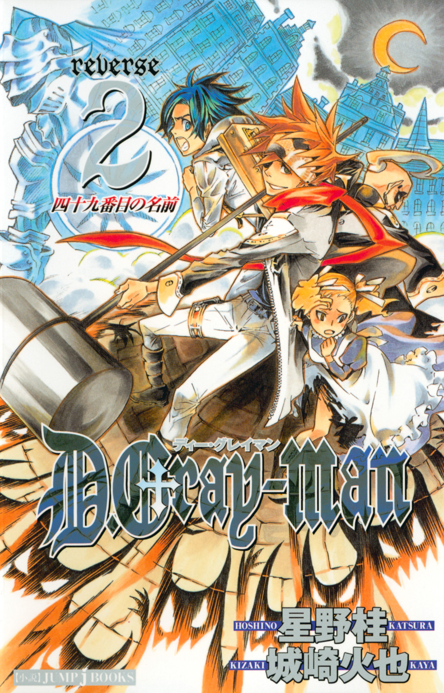
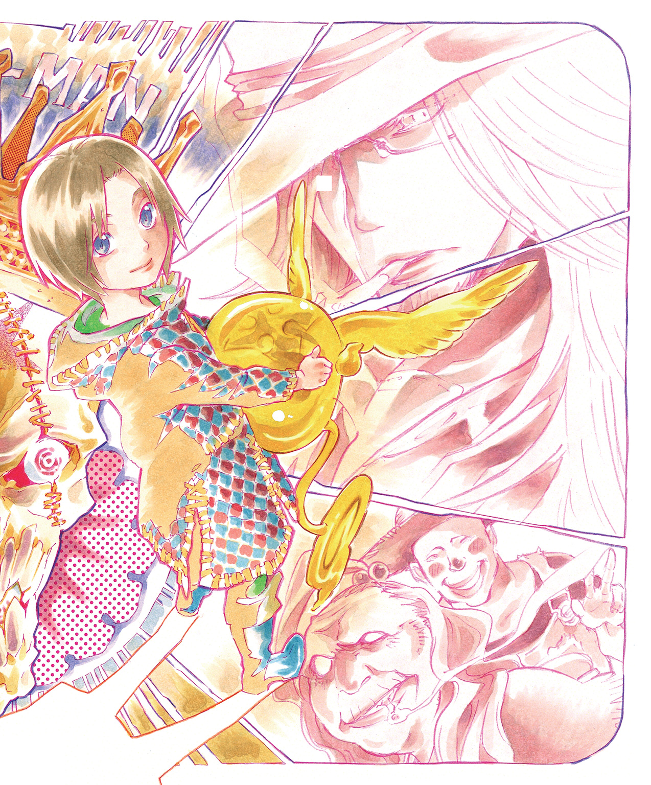
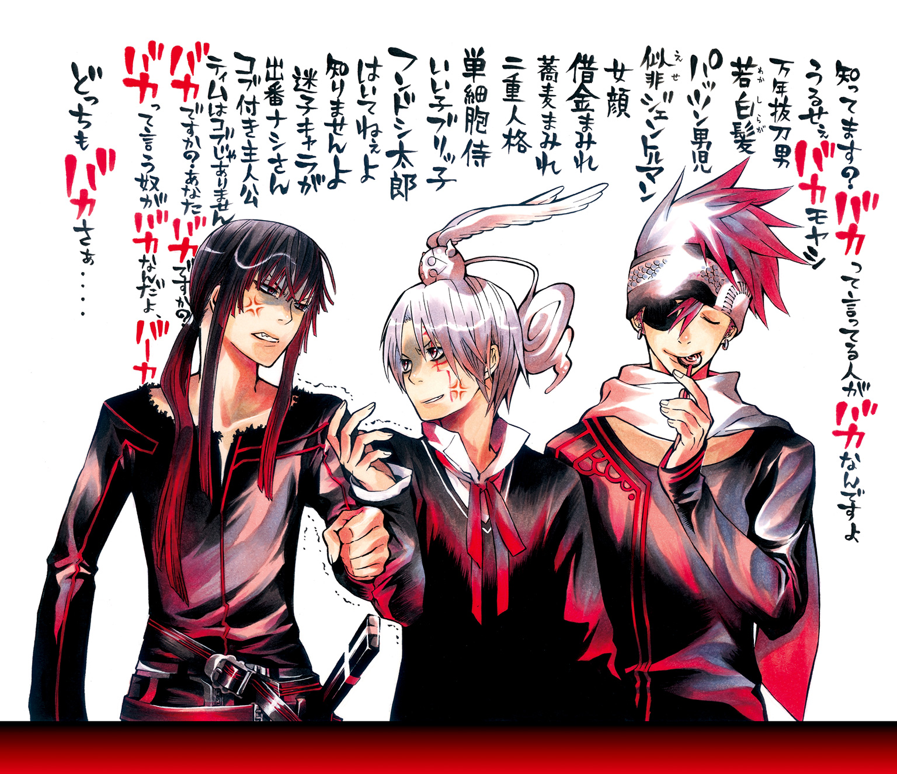
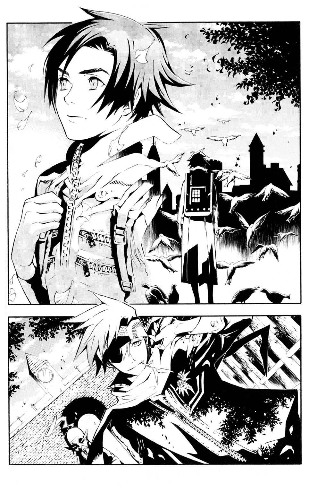
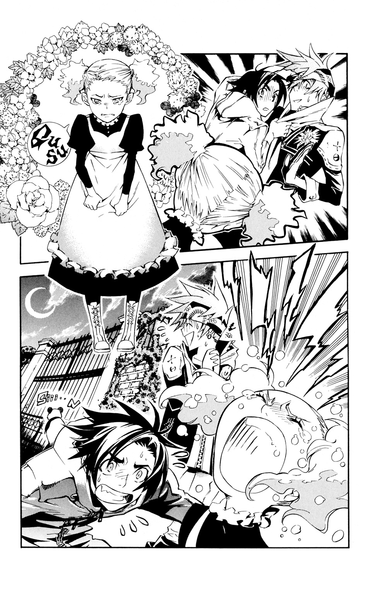
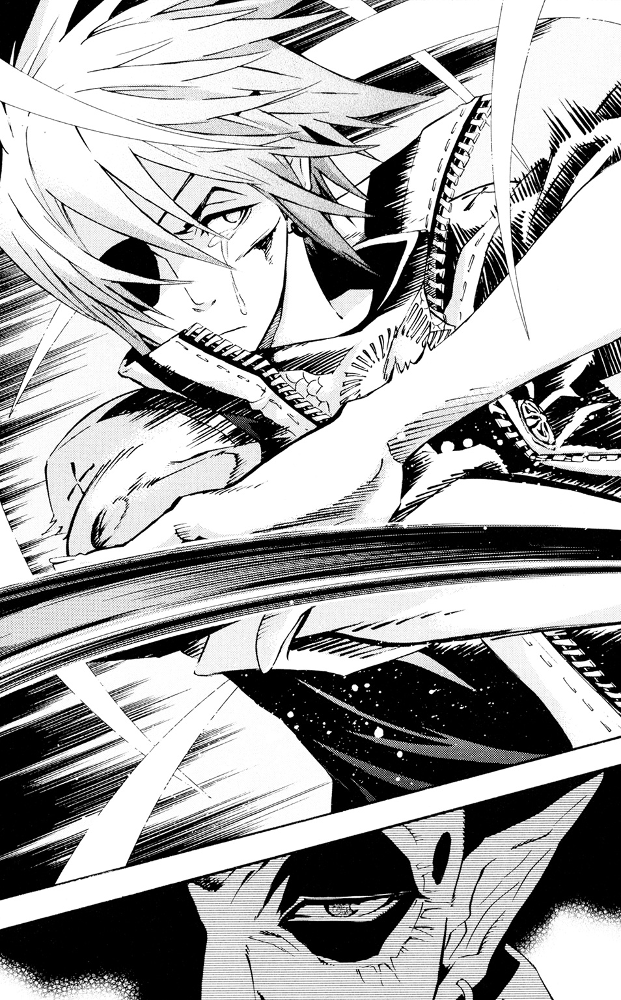
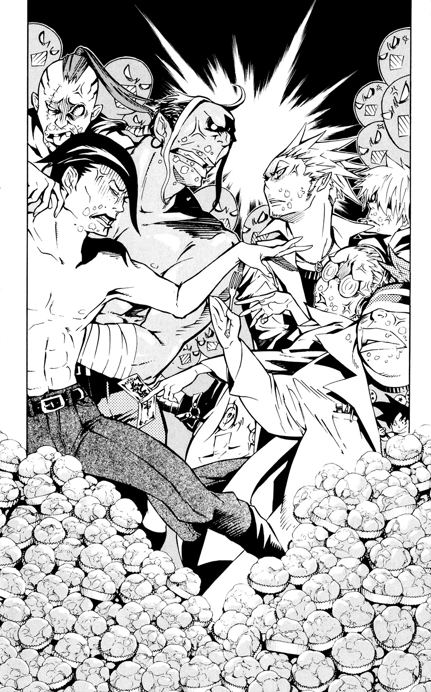
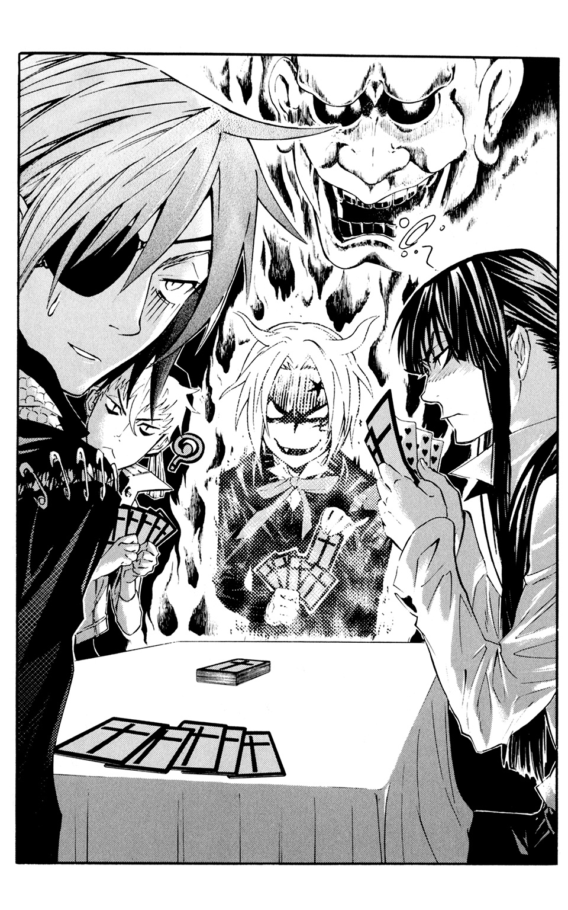
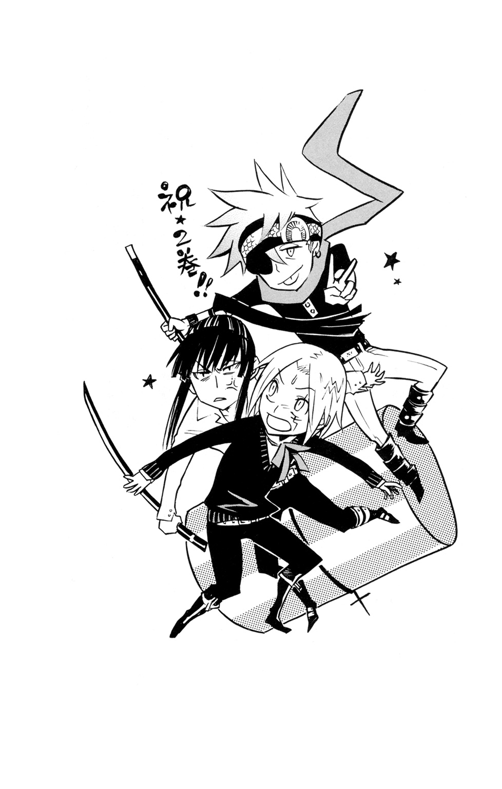

| D.Gray-man reverse 2 四十九番目の名前 | |
| 星野桂 & 城崎火也 | |

この本は縦書きでレイアウトされています。
また、ご覧になる機種により、表示の差が認められることがあります。


profile
千年伯爵
世界の終焉を願う謎の存在。悲劇を材料に「アクマ」を造り出す。
ラビ
『黒の教団』のエクソシスト。ブックマン見習いでもある。
ブックマン
世界の裏歴史を記録する者。名はない。
ダグ
『黒の教団』の探索部隊。ラビを入団したての頃からよく知っている。
コレット
ドレセール家のメイド。まだ10歳だが芯の強さを持っている。
アレン・ウォーカー
『黒の教団』のエクソシスト。寄生型のイノセンスを持つ。
コムイ・リー
『黒の教団』科学班室長。有能だが、何をしでかすかわからない科学オタク。
この作品はフィクションです。実在の人物・団体・事件などには、いっさい関係ありません。
彼の名は千年伯爵。世界を終焉に導く者。
とんがり耳に大きな口。
好きなものは、悲劇。
りんりんりん。
山のように積まれた電話が鳴っています。
りんりんりん。
電話の山に囲まれて、今日も伯爵は笑っています。
伯爵の電話はみんな、悲劇につながっています。
数え切れない悲劇が世界中で生まれ、伯爵の来訪を待っているのです。
悲しみの卵たちが、孵化してアクマとなる日を待ちかねているのです。
伯爵は大忙し。
足取りも軽やかに街を行きます。
赤茶色の石畳が敷き詰められた道は
まるでチョコレートのよう。
賑やかな音楽が遠くから聞こえてきました。
空には飴王のような色とりどりの風船が舞っています。
そして笑いさざめく人の声。
どうやら、今日はお祭りがあるようです。
ざわめきに引き寄せられるように歩いていた伯爵は、
ぴたりと足を止めました。
伯爵の服の裾を、幼い子どもがつかんでいたのです。
えんじ色の毛糸の帽子に茶色のコート。秋色の子ども。
ひょいと片手で抱え上げられそうな、小さな小さな子ども。
そのふくふくした赤い頰を涙がこぼれ落ちていきました。
「何ですカ、きみハ？」
「おかあさーん、どこー」
泣きじゃくる子どもは伯爵から離れようとしません。
小さな手で伯爵の服をぎゅっとつかんでいます。
「仕方ありませんネ♡」
ひょいと伯爵がポケットから取り出したのはおんぶひも。
器用に子どもを背中にくくると、伯爵は再び歩き出しました。
＊
子どもを背負って伯爵はお出かけです。
向かったのは東にある町。
あちこちにお寺や石像があり、落ち着いた雰囲気です。
黒髪、黒目の人々が、伯爵を見て驚いた表情になりました。
それもそのはず、とんがり耳に奇妙な帽子をかぶった伯爵は、
雑草の生える道に突如現れた、
毒々しいラフレシアの花のよう。
建ち並ぶ家の一角で、伯爵は足を止めました。
その家には永遠の眠りについた男がいました。
そばには彼にとりすがって泣いている若い女性がひとり。
しゃくりあげるたびにさらさらと揺れる黒髪は、まるで墨の川のよう。
彼女の喉からはもうかすれた声しか出ません。
でも、彼女は泣きやもうとしません。
伯爵はそっと近づき、声をかけました。
「どうしましタ？」
涙を頰につたわせたまま顔を上げた女性は、
まるで朝露に濡れた花のよう。
「ともに生きようと、結婚を誓ったあの人が逝ってしまったんです。
神のもとへ」
「じゃあ、取り戻しましょウ。忌まわしき神の手から彼ヲ♡」
彼女の顔に、ほんのり希望の色が浮かびました。
虚ろだった目に力が戻ります。
彼女は気づいていないのです。
今、自分が死刑台に向かう階段に一つ足を乗せてしまったことを。
夢にも思わないのでしょう。
これ以上の悲劇が自分の身に訪れようとしていることなど。
「どうやって......？」
「簡単ですヨ。
あなたは愛しい彼の名前を呼ぶだけでいいんでス♡」
「それだけでいいの？」
女性は驚きの声を上げました。
期待が彼女の心をつかみ、強く揺さぶります。
伯爵の声は毒。
それでも彼女にとっては甘い蜜。
思わず手を伸ばさずにはいられない魅惑的な蜜なのです。
「......死んだ人を生き返らせるなんて......そんな」
彼女の心は揺れ動きます。
伯爵はにっこり微笑みました。
「考えておいてくださいネ。また来ますかラ♡」
彼女はすがるように伯爵を見つめます。
そう、彼女の願いを叶えられるのは、千年伯爵だけなのですから。
伯爵には、彼女の心が手に取るようにわかります。
次に会ったとき、彼女は呼ぶでしょう。
愛しき人の名を。切に切に。天に届くように――。
世の理を捻じ曲げることを辞さずに。大きい代償を払うことも知らずに。
彼女は奪い返すでしょう。冥界に向かった彼の魂を。
そして――新たな悲劇がまたひとつ、この世に産み落とされるでしょう。
坊やは大きい目を見開いて、それを見ていました。
＊
伯爵がポケットから出したのは、折りたたまれた白い紙。
「そろそろ......ですネ。行きましょうカ♡」
今度は西へ、ひとっ飛び。
西の果てのこの町は、つい最近まで黄金の採掘でにぎわい、
一攫千金を夢見る男たちであふれ返っていました。
ですが、今はもう通りには赤土が舞うばかり。
人の姿もまばらです。
伯爵が向かったのは小さな小屋。
ベッドに横たわり、冷たくなっているのは幼い子ども。
背負った坊やより、二つ三つ年上の、
まだこの世に生を受けて十年にも満たない子ども。
その小さな体には病魔が巣食い、
命の灯はとうとう尽きてしまいました。
お父さんはそっと子どもの手を握っています。
子どもがその手を握り返すことはないけれど。
それでも彼は子どもの手を握っています。
いつか、握り返してくれるのではないかという儚い望みを抱いて。
妻を亡くした彼にとって、子どもはたった一人の家族。
そして愛する人の忘れ形見でした。
子どもの病気を治すため、父親はあらゆる手を尽くしました。
しかし、待っていたのは非情な結末でした。
子どもの冥福を祈って、数々の美しい花が捧げられました。
豊潤な香りに包まれながら、
父親は石像のように動きません。
「決心がつきましたカ？」
ゆっくりと父親の顔が上げられ、
そして彼はうなずきました。
彼の中の良識は、絶望と悲しみによって食い破られました。
悲しみは人の目をくもらせます。
伯爵の顔に克明に浮かぶ、嘲りの笑みすら見えなくなります。
伯爵がひょいと取り出したのは、骸骨をかたどった魔導式ボディ。
彼は言われるがまま、我が子の名を呼びました。
その声は安らかな眠りについていた子どもの魂をつかみ、
乱暴にこの世に引きずりおろしました。
伯爵は満足そうに見守ります。
魔導式ボディに子どもの魂が入りました。
伯爵は楽しそうに、口角をつりあげます。
魔導式ボディが父親の口をこじ開け、
その体の中へと無理やり入っていきました。
伯爵は手を叩いて笑い出しました。
皮は父、骨組みはダークマター、囚われた魂は子ども。
おぞましい兵器のできあがり。
そして――伯爵のおもちゃがまたひとつ産声を上げました。
伯爵の背中で、坊やはうとうとしています。
＊
「様子を見に行きましょうカ♡」
伯爵はスキップしながら南に向かいました。
そこは灼熱の太陽が照りつける町。
よく日に焼けた人々が陽気に歩いています。
お目当ては赤い屋根の小さなおうち。
そこにはおじいさんが一人で住んでいました。
おじいさんは遠い北の国から、
夢だけ持ってこの大陸に移り住んだのでした。
がむしゃらに働き、そして愛する妻に出会い、
苦楽をともにしてきました。
一週間前、おじいさんは長年連れ添ったおばあさんを喪いました。
がっくりうなだれたおじいさんの前に現れたのは、我らが伯爵。
いまやおじいさんはおばあさんと一心同体。
伯爵が与えた歪んだ幸せ。
人が造み出した悲しみの落とし子。人の愚かさの所産。
それがアクマ。
おじいさんの姿をしたアクマは、
まだ生まれて間もない赤子のような兵器です。
育てていかなければなりません。
伯爵はその耳にささやきました。
「さあ、人を殺しましょウ。
そして、進化していくのです、もっト♡」
おじいさんはのっそりとロッキングチェアから
立ち上がりました。
その視線はゆっくり隣の家に向けられました。
隣には、ともに励まし合ってきた老夫婦が住んでいます。
おじいさんはたくわえた立派なひげをゆっくりなでました。
「手始めにいいかもしれませんネ♡」
主をうしなったロッキングチェアがゆらゆら揺れています。
そして――世界は滅亡へ向かい、また一つ駒を進めます。
坊やは目をごしごしこすっています。
＊
伯爵はちょっとお疲れ？
彼が向かったのは、この世であってこの世でない場所にある家。
そこには人であって人でないものが住んでいます。
ドアを開ければ、そこはおもちゃ箱を思わせる部屋。
駆けてきたのは、なめらかな浅黒い肌をした少女。
レースのたくさんついた黒いワンピースを着たその姿は
まるでお人形のよう。
少女の目が好奇に輝きます。
「その子誰――？」
「知りませン♡」
「その子、食べちゃうのぉー？」
「食べませんヨ♡」
「じゃあ、僕が食べちゃおうかなぁー」
「ダメでス♡」
少女は甘いキャンディを舐めました。
彼女は人間が大嫌いです。
愚かで脆弱な人間など、
キャンディの包み紙と同じくらいどうでもいいこと。
その紙がくしゃりと握りつぶされようと、踏まれようと、刻まれようと、
彼女の心は欠片も揺るがないでしょう。
「それより遊ぼうよぉ、千年公」
「忙しいんですヨ♡」
「その子どものせいでぇ？」
少女の目に物騒な光が宿ります。
「違いまス♡」
伯爵はメモを手にすると、また旅立ちます。
坊やが鼻をぐずぐずいわせています。
＊
次なる悲劇を求めて北に行った伯爵。
そこは最初に坊やと出会った町。
もうお祭りは終わったのか、町は静けさに包まれていました。
てくてく伯爵は歩きます。
坊やを背負って歩きます。
悲劇に向かって歩きます。
突然、背中の坊やが泣き出しました。
「困りましたネ、どうしたんでしょウ♡」
ちっとも困ったように見えない伯爵。
その耳に届くは、泣きじゃくる大人の声。
一軒家の窓をのぞくと、一人の婦人が顔を覆い、
しくしく泣いていました。
隣に寄り添う男が、そっと彼女の肩を抱きます。
彼の顔にも色濃い悲しみが見えます。
悲劇の萌芽。
それが芽吹くはいつの日か――。
「お母さん！」
背中から大きい声。弾む声。
伯爵の背中から、子どもがぴょこんと飛び降りました。
一目散に駆け寄るのは母の胸。
抱きしめられるのは、子どもの常。
「あなたが連れてきてくれたんですか？ ありがとうございます！」
母親が頭を下げました。
伯爵はにっこり。
坊やの頭を優しくなでました。
「早く大きくなって、たくさん好きな人をつくるんですヨ♡」
「ありがとうございます！」
伯爵は背を向け、歩き出しました。
「......そして素敵なアクマを造ってくださイ。
楽しみに待ってまス♡」
そのつぶやきは誰の耳にも届くことなく、
一陣の風とともに消えていきました。
今日も伯爵は世界を縦横無尽に駆け巡ります。
彼の名は千年伯爵。アクマ製造者。
頭にはシルクハット。
好きなものは――悲劇。
炎を思わせる赤い髪をかきあげ、青年は眼帯をしていない左目をゆっくり閉じた。
とたんに闇が訪れる。
光のない漆黒の世界で重々しく問いかける声がした。
〔おまえは何者か？〕
青年は静かに胸の裡で答えた。
――ブックマンを継ぐ者。
〔ブックマンとは何か？〕
――ブックマンとは歴史の傍観者であり、記録者。世界の裏歴史を書き留め、後世へとつないでいく者。
ひとところに留まらず、ありとあらゆる場所を巡り、さすらい、その目に歴史を焼き付け、記すのが役目。
〔ブックマンはどうあるべきか？〕
――情を移さず、情に流されず、様々な人々と言葉をかわし、そして何事もなかったように去っていく。
〝記録係〟に感情は不要。ただあるがままを己が私情を交えずに記さなくてはならない。
〔今一度問う。おまえは何者か？〕
――ブックマンの継承者。名は新しい場所に行くたびに付け、そして移動するたびに捨てた。
今は黒の教団のエクソシストでもある。現在の名は――。
「ラビ！」
自分を呼ぶ声に左目を開けると、中国風のゆったりした服に身を包んだ小柄な老人が扉を開けて立っていた。
薄い頭髪は頭頂でひとまとめにされ、底光りする鋭い目は化粧で黒く縁取られている。
誰しも目を奪われる異相ながら、どんな場にもするりととけ込むような自然な雰囲気を備えている。
老人は現『ブックマン』。そして自分の師だ。
「仕事だ。すぐに出立の用意をしろ」
どうやら『黒の教団』から新しい任務の連絡があったらしい。
現在、世界を滅亡へと導こうとしている千年伯爵と、ヴァチカン直属の軍事機関である黒の教団は、世界の命運を賭けて激しい戦いを繰り広げている。
師であるブックマンが裏歴史を記しているため、ラビはブックマンとともに『エクソシスト』として黒の教団に所属している。
エクソシストは、千年伯爵が人類を滅ぼすために造った兵器である『アクマ』に唯一対抗しうる存在だ。エクソシストは『イノセンス』と呼ばれる不思議な物質に選ばれ、それを扱うことができる。
イノセンスは『神の結晶』とも言われ、それゆえエクソシストは『神の使徒』と呼ばれることがある。
神の使い――か。柄ではない。ラビは薄く笑った。
「どうした、ラビ？」
「なんでもないさ」
現在、黒の教団に所属するエクソシストは二十人に満たない。息つく暇もなく、世界中に駆り出される。
ラビはエクソシストの証である、黒い団服を羽織った。
この服を着るとき、自分はエクソシストになる。本質はブックマン見習いのままだが。
「さて、今度はどこさ？」
「フランスだ」
＊
黒い髪を風になぶらせたまま、じっと一方を見つめて動かない小柄な青年がひとり。その身にまとった白い団服には、彼の清廉な心を表すかのように染みひとつない。
微動だにせず、背筋をまっすぐ伸ばして一心に町の入り口に目を向ける様は、主人の帰りを待つ忠実な犬を思わせた。
「変わってないなあ......」
そっと遠くから青年を見守りながら、ラビはつぶやいた。
青年の名はダグ。黒の教団の団員で、情報収集を任務とする探索部隊に所属している。
パリにほど近いこのエリゼという町で、奇怪な噂の調査に来たダグは、アクマが絡んでいる可能性が高いと判断し、教団本部にエクソシストの応援を頼んだ。
それでラビと、その師であるブックマンが駆けつけたというわけだ。
「どうしたラビ？」

傍らでブックマンが、突然足を止めた自分を怪訝そうに見上げている。
「ジジイ、ちょっとここで待っててくれさ」
師匠をジジイ呼ばわりすると、ラビはそっと足を忍ばせてダグに近づいた。
イノセンスや千年伯爵の情報を求め、世界中を駆けめぐる探索部隊は、常に危険と隣り合わせの仕事だ。アクマと接触し、命を落とす者も少なくない。
つまり、現在任務遂行中のダグの神経は張り詰めているはず。ラビは己が武器である槌をそっと手に取った。伸縮自在の槌がみるみる大きくなる。
ちょっとしたいたずらだ。
足音を潜め、気配を殺し、ラビはダグの真後ろに回った。
息を止めると、そっと槌を振り上げる。
何かを感じ取ったのか、ダグが素早く振り向いた。その青い目が大きく見開かれる。
「ラビ！」
その声と同時にラビは槌を振り下ろした。固い手応えがあった。
「あいた！」
顔をしかめ、頭を押さえるダグに、ラビはにやにやと笑ってみせた。
「ダグ、油断は禁物さ！ 探索部隊たるもの、常に背後に気を配らんと」
ダグが情けなさそうな顔になった。まるで主人に叱られた子犬のようだ。
「ひどいなあ。久しぶりに会ったのに、いきなりこれ？」
「悪い悪い。これ以上ちぢんだら、小学生に見えるよな～」
百六十二センチしかないダグとは十五センチの身長差がある。見下ろしながら頭をなでると、ダグはムッとしたように睨んできた。だが、まったく迫力がない。なにせ、どんぐり眼の童顔なのだ。
「おまえ、探索部隊の人間としては致命的に鈍くさいよな～」
ダグの肩をバシバシ叩いて笑っていると、背後に嫌な空気を感じた。
「はうっ！」
振り返る暇もなく、思い切り背中に飛び蹴りを食らい、ラビは前方にもんどりうった。
「バカ弟子、いい加減にせい。仕事に入るぞ」
回しそこねたコマのようにごろごろ転がり、壁にぶつかってようやく止まったラビは、埃まみれになりながら立ち上がった。
「蹴ることないさ！」
叫んで抗議してみたが、当のブックマンはこちらを見てもいなかった。向かい合うダグとブックマンを、ラビは恨めしげに見つめた。
「お久しぶりです、ブックマン」
ぴしりと背筋を伸ばしたダグが深く頭を下げると、ブックマンはうむ、と軽くうなずいた。
「久しいな、ダグ。元気そうで何よりだ」
「ジジイが一番元気さ......」
団服をはたきながら、ラビはやるせない気持ちでつぶやいた。
「とにかく長旅でお疲れでしょう。近くの居酒屋で夕食でもとりがてら、調査結果を報告します」
歩き出すダグの背を、ラビはじっと見つめた。ピンと伸びた背筋に迷いのない足取り。やはりあの頃と変わっていない。
いや、そうでもない。さきほどの屈託のない表情にくだけた態度。最初、ダグはまともに目を合わせてもくれなかったのだ。今はもう遠い昔のことのように思える。
懐かしく思い出していると、ダグが振り返った。目を細めるようにして、こちらを見つめてくる。
「ラビはちょっと変わったね......」
一瞬、心を読まれたかと思った。
「え？ どこが？」
ダグの口がほころび、その目に優しい光が宿った。
「ちゃんと僕の目を見て話してくれるようになってる」
「......」
ラビは入団した当初、ダグに言われたことを思い出した。
『きみの目はガラス玉みたいだね。僕を映しているけど、それは反射しているだけで、中には何も届かない』
もうあれから一年以上たつのか。
ラビはそっと団服を見下ろした。いつしか、この服を着るのが自分の日常となっていた。
「一緒に組むのは二回目だね。今回もよろしく、ラビ」
夏のヒマワリのような明るい笑顔がまぶしかった。
「ああ、こっちこそ」
ダグが嬉しそうに微笑んだ。
――こいつは本当にわかりやすいなあ。
今、ダグの目はラビへの信頼に満ちていた。それは、天頂から地平へと移動しつつある太陽よりも体を温かく包み込んでくれた。
＊
「その噂ってのはいつから広まったんさ？」
ラビはかき消されないよう、声を張り上げた。それでも隣に座ったダグは眉を寄せ、耳を近づけてくる。
町の大通りにある居酒屋は夕方前だというのに、職人らしき男たちでごった返していた。ちょっと動けば隣の席の人間に触れそうになるほどの混み具合だ。
店内にはパイプの煙や肉の焼ける匂いが充満し、男たちの笑い声や話し声と混ざり合って、はじけそうな熱気をはらんでいる。
ダグはもう慣れているのか、特に驚くこともなく自然に大声を出した。
「まずは食事を注文しましょう。何か食べたいものはありますか？」
ダグの問いに、ブックマンは首を振った。
「いや、おぬしに任せる」
「とにかく腹が減ってるから、ボリュームのあるものを頼むさ！」
ブックマンを押しのけるようにしてラビは叫んだ。さっきから腹が減りすぎて足に力が入らない。
ダグは笑ってうなずくと、注文を取りに来た若い娘に声をかけた。
「今日は何がお薦めですか？」
「牛肉のワイン煮込みがありますよ。それに粗塩でゆでたジャガイモとインゲンを付け合わせるのはいかがでしょう」
聞いているだけで、口の中に唾がたまってくる。
「おいしそうさ！ じゃあ、それを五人前！」
腹具合から鑑みて、それぐらいが妥当だろう。
「五人前!?」
ダグの声が裏返る。ラビは安心させるように笑ってみせた。
「オレが食べるから大丈夫さ！」
「そうなのか？ じゃあ、それとパンとブルーチーズ。それからミネラルウォーターをボトルで」
ほどなく食事は運ばれてきた。軽くグラスを合わせると、ダグは話し始めた。
「例の噂ですが、ここ一、二か月くらいに広まったそうです。今では町の子どもたちも知っています。ですが、肝心の出所がはっきりしないんです」
パリの西北に位置する、ここエリゼの町では、奇妙な噂が広まっていた。町外れの森の奥にある『払暁の女神像』に祈れば、死んだ人間が奇跡的に蘇るというものだ。
ラビは教団で聞いた情報を思い出しながら、パンをちぎっては、いそいそと口に運んだ。焼きたてのパンは、外はカリカリに焼けているのに、中はふんわりとして、舌触りも滑らかだ。
「その女神像とやらには行ってみたのか？」
ブックマンの問いに、ダグは目を伏せて首を横に振った。
「申し訳ありません。できうる限りの人に尋ねてはみたのですが、正確な場所を知っている者をまだ見つけられていません。森にも探しに行きましたが、女神像を配する廃園が点在し、どれがその像なのか特定できません」
「そうか......だが、私たちエクソシストを呼ぶのだ。千年伯爵やイノセンスにつながる何かを見つけたのだろう？」
「はい。この町で何かが起きているのは間違いありません。というのも、ここ一か月くらいの行方不明者の数が尋常じゃないんです」
「というと？」
「私が確認しただけで十四人です」
「ほぼ二日に一人が消えている計算か......」
「しかも、エリゼの住人だけで、です。エリゼはパリに近いこともあって人の往来が絶えない町です。もしかすると、住人以外の人間も消息を絶っているかもしれません。実際、宿泊客が何も告げずに宿を出たきり戻ってこないというような話もいくつか聞いております」
「なるほどな......」
ブックマンが思案げな表情になった。ラビは絶え間なく料理を口に運びながらその様子を見守った。
牛肉はよく煮込まれていて柔らかい。口いっぱいに広がる旨みとほのかに感じられるワインの香りに、ラビはうっとりと酔いしれた。
さらにもう一切れと、フォークを刺そうとしたラビの手が滑った。
――あっ、ヤベッ。
ブックマンの顔にべちょっとはね飛んだ肉の塊がぶつかった。
謝ろうとしたが遅かった。
ブックマンの光速の拳がラビの脳天にヒットする。目の前に流星群が見えるほどの衝撃だ。
「まったく貴様は。話を聞いておるのか！」
頰からずり落ちる肉を忌々しそうに取ると、ブックマンは一喝した。
ラビは頭頂を押さえ、恨めしそうにブックマンを見た。
――なんて手が早いんさ。謝る間もよける間もないんだから。
「クソジジイ......」
「何か言ったか？」
ギロリとこちらを見たブックマンの眼光の恐ろしいこと。
ラビは居住まいを正した。
「ちゃんと話は聞いてたさ！ 行方不明者がたくさんいるってんだろ？ でもここはパリに近いし、仕事やら遊びやらでふらっと出かける奴も多いんじゃないか？ そこまで異常事態とは思えないさ」
「むう......」
ここ数年、地方の人間やドイツなど外国の人間が仕事を求めて押し寄せ、急激にパリの人口が増加しているのは周知の事実だ。正鵠を射た発言にブックマンは黙った。
「確かにそれらのすべてが事件とは無関係という可能性もあります。でも、捨て置けない噂をもう一つ聞いたんです」
「何さ？」
口を開こうとしたダグが、ちらっと隣のテーブルに目をやった。
「ちょうどいい......ちょっと隣の人たちの会話を聞いてください」
ラビとブックマンはさりげなく食事に手をつけながら、意識を隣に向けた。
労働者仲間らしき男たちの声は大きく、聞き取るのに不自由はなかった。
「そういや、ドレセールの旦那、夜中にふらふらしてるらしいじゃねえか」
「ドレセール？」
まだ二十歳くらいとおぼしき若い男がきょとんと、年配の男たちの顔を見回した。リーダー格らしい、体格のいい男がうなずいた。目つきが鋭く、なかなか迫力がある。
「ああ、おまえは地方から出てきたばっかりだから知らねえのも無理はねえな。この町一番の金持ちの話だ。ジェローム・ドレセール。いわゆる〝ブルジョワ〟ってやつだ。紳士服仕立て業で、しこたま儲けたらしい。でかい屋敷の他に別荘も持って優雅に暮らしている。狭い屋根裏部屋に住んで仕事をしているオレたちとは住む世界が違う奴さ」
「はあ、羨ましいなあ......。オレなんか一日十時間縫製して、ようやく飯にありつけるって有様なのに」
若い男が深々とため息をついた。
「ところが、そうでもねえんだ。一か月前、嫁さんが死んで、ふさぎこんで家から出なくなったらしいぜ」
――一か月前。
ラビは思わずダグを見た。ダグが静かにうなずく。
「だけど、夜になると町をぼうっと歩いているらしいな。どうなってるんだか」
「一人息子も頼りになんねえしなあ」
「セルジュだろ。母親にべったりだったから、一時期は荒れてたよなあ。酔っぱらって夜の町をふらついて。ようやく落ち着いたみたいだけど」
「まあ、散財するしか能のないバカ息子、ってのに変わりはねえけどな」
男たちが嘲るように笑った。
「使用人もずいぶん減ったらしいな。今残っているのはパリから来たっていう、小さいメイドだけだってよ」
「ああ、あの子か。あの女の子も奥さんが死んでから顔つきが一層キツくなったよな」
「もとから子どもらしさがないガキだったけどな。今は道ですれ違っても怖くて声がかけらんねえ」
わざとらしく怯えた顔をする男に、周囲の人間がドッと笑った。
「小さくても女は怖いよな」
笑い続ける男たちをちらっと見て、ダグが口を開いた。
「こんなふうに、町中に広まっています。ジェローム・ドレセールは一か月前、妻を亡くし、部屋に引きこもってしまいました。その息子のセルジュはかなり荒れていたようです。それと、僕も今知ったんですが、メイドにも変化があったみたいですね。ちょうどその前後に死んだ人が生き返るという『払暁の女神像』の噂が始まりました。そして大勢の行方不明者――この三点をアクマと結びつけるのは不自然でしょうか？」
アクマとは悲劇を材料に造られる悪性兵器だ。
愛する者が死に、悲しんでいる人間のもとに千年伯爵やその使いの者が甘い誘いを持ちかける。死んだ人間を生き返らせることができるという戯れ言にすがり、死んだ人の名を呼んでしまうと、あとは地獄へ一直線。
愛する者の声で呼び戻された魂はダークマターでできた骨組みに取り込まれ、呼び出した人間の体の中へ無理矢理こじ入る。
死んだ者も、呼び出した者も、誰一人として救われない、最悪の結末。
残るのは、伯爵のオモチャと成り果て、殺人マシーンとなったアクマだけ。しかもタチが悪いことに、アクマは人間の皮をかぶっているので外見からは見分けがつかないのだ。
ブックマンが小さくうなずいた。
「夫人の死、愛する者に死なれた一家、死んだ人間が生き返るという噂。そして大量の行方不明者――すべてが一か月前から動き出している。確かに偶然というには揃いすぎているな。まずは噂の要であるドレセールの屋敷に行ってみるか」
「お願いします」
ブックマンは立ち上がると、鋭い目でラビを見つめた。
「ラビ」
「わかってるさ」
ラビは静かにフォークを置き、ブックマンを見上げた。
これまでの情報を鑑みるとジェローム氏の周辺にアクマがいる可能性が高い。屋敷を訪問すれば、そのまま戦闘になるかもしれない。気を抜くなということだろう。
――まったく、苦労性なんだから。パンダは。
ブックマンの目の回りの黒い縁取りを見ながら、ラビは苦笑した。
――オレは油断などしない。いつどこで誰がアクマになっていてもおかしくないんだから。
ラビはすっと心の奥が冴えていくのを感じた。
「では、行くか」
ブックマンにダグがうなずき、立ち上がった。
三人は張り詰めた雰囲気のまま、賑わい続ける居酒屋を出た。
＊
「こっちです。近くに行けば、すぐわかります」
ダグの案内で、ラビたちはジェローム・ドレセールの屋敷に向かった。
「なるほどね......」
ラビは思わずつぶやいた。確かにすぐにわかった。これまで歩いてきた町並みとは明らかに違う一角がそこにあった。
木骨作りの素朴な建物が続く通りの奥に見えてきたのは、夕陽を浴びて金色に輝くアーチ型の門だ。遠目でも、植物をモチーフにした優美な装飾がなされているのがわかる。
「これはまた立派な屋敷さ......」
門の前に立つと、ラビは感嘆の声を上げた。
彫像があちこちに配された広い庭の奥に、相当の年代を経たと見受けられる豪奢な屋敷がどっしりそびえ立っている。扉や窓枠には門と同じく繊細で凝った意匠が施され、見る者を圧倒する荘厳さを醸し出している。
門のそばにある呼び鈴を鳴らすと、屋敷から小柄な少女が出てきた。
少女は紺色のロングワンピースに白いエプロンをつけている。メイドの服装だ。おそらく酒場の話に出てきた子だろう。
少女は二つに束ねた栗色の髪を揺らしながら、ゆっくりと門に向かってきた。その顔には子どもらしい無邪気さがなく、厳しく引き締まっている。
「どちら様ですか？」
門の格子越しに尋ねてきた少女の声は冷たかった。その茶色の大きな瞳は猜疑に満ちている。
「ヴァチカンの使者ですが、この屋敷のメイドさんですか？」
ダグが優しく尋ねた。子どもにもきちんと敬意を払うあたりが真面目なダグらしい。
「ええ、そうです」
少女はダグから目を離さずに答えた。
予想していたとはいえ、改めて見るとその少女は本当に小さく、幼かった。
「きみはいくつさ？」
ラビは思わず問いかけた。ブックマンより低い背に、小枝のような華奢な手足。目の前の少女は、どう見ても八歳くらいだ。
「十歳ですけど、明日、十一歳になります。どういったご用件でしょう」
少女は淡々と答えた。その凜とした揺るぎない態度には、大人をもたじろがせる迫力があった。確かに居酒屋の男たちが話していたとおり、その年の割に中身はかなりしっかりしているようだ。
「ジェローム・ドレセール氏にお会いしたいんですが......」
「旦那様は伏せっていらっしゃいます。どなたにもお会いになりません」
少女は逡巡することなく、ぴしゃりと言った。もう幾度となく同じ応対を繰り返してきているのがわかる、まったく迷いのない口調だった。
「お引き取りくださいませ。失礼いたします」
そう言い捨てると、少女は用件を尋ねることもなく背を向けた。ダグが焦ったように格子をつかんで声をかけた。
「あ......ちょっと待ってください！」
「コレット！ お客様か？」
そのとき、屋敷から一人の青年がこちらに向かってきた。
「セルジュ様」
コレットと呼ばれた少女が驚いたように青年を見つめた。
――セルジュというと、この屋敷の一人息子か。
ラビはすらりと背の高い青年をまじまじと観察した。
年は二十をいくつも過ぎてはいないだろう。金髪の巻き毛に空色の瞳。すべすべした若い娘のような白い頰。仕立てのいい燕尾服を着たその姿はまるで貴公子のようだ。
ゆったりした足取りでこちらに向かう様も優雅で、育ちの良さがわかる。
ダグが緊張した面持ちでセルジュを見つめた。今度こそ門前払いをされないようにと気負っているのだろう。
「二階の窓から見ていたのですが......もしやと思いまして」
セルジュの目がラビの胸元に注がれた。
「やはりローズクロス！ 黒の教団の方ですね？」
ダグがホッとしたようにうなずいた。
「ええ、そうです。ジェローム氏にお話をうかがわせていただければと思ってお訪ねしたのですが......」
「そうですか！ ですが、あいにく父は伏せっておりまして......。もし僕でよければ、お話させていただきますが」
願ってもない申し出に、ダグはすぐにうなずいた。
「ぜひ、お願いします！」
「コレット、門を開けなさい」
セルジュに促され、コレットが無表情のまま門扉の鍵を開ける。
「私がお客様をご案内するから、おまえは先に行ってお茶の用意をしてくれ」
「はい」
コレットはこくりとうなずくと、屋敷に向かって駆けていった。
「すいません、無愛想な子で」
「それにしてもまだ十歳さ？ どうしてまた、あんなに小さい子をメイドに？」
セルジュに続いて屋敷に向かいながら、ラビは尋ねた。
率直な物言いに、セルジュが苦笑を浮かべた。
「去年、パリで縫製工をしていた彼女の父が病気になりましてね。借金もあって大変だったので、ウチの下請けをしていたこともあって、父が見かねて金を貸してあげたんです。返す当てがないということで、一人娘であるコレットがウチでメイドとして働くことになって」
「なるほどね......」
そういう家庭の事情ならば、子どもが働くのは珍しいことではない。
パリを初めとする大都市では今、貧困とそれにともなう問題が増加している。一説によると農村部よりも貧窮状態が深刻だと言われている。その厳しい労働条件に家計は逼迫し、崩壊している家庭も少なくない。貴族やブルジョワなどの裕福な層との格差は広がるばかりだ。
「あんなに小さいのに、大変ですね......」
ダグの顔に暗い陰がよぎった。不遇な少女に胸を痛めているのだろう。ダグは優秀な探索部隊だが、情に流されやすいところがあった。
――ほんと、甘い奴さ。
そこが彼の長所であり、短所でもある。
「いてっ！」
ラビは臀部に小さい痛みを感じ、振り返った。鍼を持ったブックマンが怖い顔をしてこちらを見ている。
「なにするんさ、パンダ？」
「おまえが口を出すと話がずれる。少し黙っておれ」
ブックマンがそっとささやいてきた。しぶしぶ口を閉じたラビの代わりに、ダグが如才なく話を続け、探りを入れた。
「しかし、一縫製工の借金を立て替えたりするなんて、お父上のジェローム氏はずいぶんと面倒見のいい方なんですね」
セルジュが嬉しそうに微笑んだ。
「ええ......尊敬しています。母亡きあと、父を心配して見舞いに来てくださる方が後を絶たなくて。残念ながら、体調を崩しているので伏せったきりですが。どうぞ」
セルジュが屋敷の扉を開けてくれた。
三人の前に開放的な空間が広がる。贅を尽くした玄関だというのはすぐにわかった。
壁には大きな肖像画がいくつも飾られている。燭台などの装飾品も緻密な細工が施されたものばかりだ。
だが床は埃っぽく、室内は薄暗く見える。広い屋敷にメイドが一人で、掃除も行き届かないのだろう。
ラビは一見恵まれているはずのこの屋敷に何か寒々したものを感じた。
「どうぞ、こちらです」
通された客間もまた広々としていた。柔らかなカーペットを踏みしめ、豪奢なビロードのソファに三人は腰掛けた。
すかさずコレットがお茶を運んでくる。純白のテーブルクロスの上に並べられているのは、蔓薔薇模様の高級磁器だ。
「おおー、ありがとう。いい香りさ」
ラビは声をかけてみたが、コレットは無言のままだ。
黙々と自分の仕事をこなすコレットを、ダグが話しかけたそうに見つめている。さきほどの身の上話を思い出したのだろう。
ブックマンがダグを促すように見た。その視線に気づいたダグが、慌てて顔を引き締めた。さっきと同様に、質問役はダグに任せるようだ。
ダグは気持ちを切り替えたのか、軽く咳払いすると向かいに座るセルジュに落ち着いた笑顔を向けた。
「突然お訪ねして申し訳ありません。私たちは黒の教団の者で、最近この町に『払暁の女神像』なる不思議なものがあると聞いて、調査しているところです。地元の名士であるジェローム氏からもお話をうかがえればと」
「払暁の女神像......ああ、ウチにも訪ねて来ましたよ。旅の占い師とかなんとかいう怪しい輩が」
セルジュが汚らわしいと言わんばかりに顔をしかめた。
「その占い師に会ったんですか？ どんな奴でした？」
「黒いフードを目深にかぶっていたので、顔はよく見えなかったんですよ。ただ、体格のいい壮年の男性ということはわかりました。最初は『お悔やみを――』と言ってきたので、つい家にあげてしまいました。しかしよくよく話を聞いてみると、女神像に祈れば死人を生き返らせることができるとか胡乱なことを話し始めて。母が亡くなったことをどこからか嗅ぎつけたのでしょう。ああいった詐欺師まがいの連中は本当に耳聡い」
セルジュの白い頰が怒りでみるみる赤く染まった。感情が昂ぶりやすい性質らしい。
「人の死をなんだと思っているのでしょう。それを商売にするなんて！」
「信じなかったんですね」
ダグの言葉に、セルジュが心外だと言わんばかりに空色の目を見開いた。
「当たり前でしょう。死んだ人間を生き返らせるなんて、神にでもなったつもりなのでしょうか。だいたい見るからに怪しい輩でしたよ。黒いフード付きのマントをすっぽりかぶって顔や体を隠しているし、不気味なコウモリを連れているし。死神みたいでしたね」
ダグたちは顔を見合わせた。怪しい占い師――それはあの男か。
世界中を飛び回り、グロテスクなオモチャを造り続け、世界を破滅に導こうとする――千年伯爵なのか。
「払暁の女神像の場所は聞かれましたか？」
「いえ。追い返したので聞いていません」
セルジュはきっぱり言った。
「では、あなたも場所は知らないし、行ったことがないんですね？」
「ええ！ そう言ってるじゃないですか！」
セルジュがガチャンと乱暴にカップを置いた。紅茶が飛び散り、白いテーブルクロスに点々と茶色の染みが浮かんだ。
「......すいません、興奮してしまって」
「こちらこそ、すいません。お気を悪くさせるつもりはなかったのですが」
ダグの言葉にセルジュがそっと目を伏せた。長い睫毛が揺れ、唇がきゅっと強く結ばれる。涙を堪えているのだろう。
「母は優しい人でした......いつも笑顔を絶やさなくて。亡くなって一か月もたつのに、母の死について思うとまだ胸が締めつけられます。......情けないですね」
「そんなことは――」
セルジュがゆっくり首を振った。金色の巻き毛がふわりと揺れる。
「僕がしっかりしないといけないのに。父は大きなショックを受けて、ずっと部屋に引きこもっているんですよ。体より心の問題らしくて。今はそっとしておくしかないと医者に言われているので、別荘での療養を考えています」
セルジュがふうっとため息をついた。
「ところで、セルジュさんは今何を？」
意外なことを聞かれたように、セルジュの顔に戸惑いの色が浮かんだ。
「僕ですか？ 父の事業を継ぐべく修業中の身です」
「ということは、あまり家にはいらっしゃらない？」
「そうですね。家で資料を見たりすることはありますが......出かけていることが多いです」
自分の話になると、急にセルジュの歯切れが悪くなった。
ラビはセルジュをじっと観察した。
よそ者にあまり話したくないのか、それとも話しにくい内容なのか。
居酒屋では、町の人たちに放蕩息子のように言われていた。
今は父を思い、仕事に励む青年に見える。どちらが本当の彼なのだろう。
「セルジュ様」
コレットがそっとセルジュに近づいた。
「ルブラン男爵が旦那様にお会いしたいとお見えになっておりますが」
「また？ 親父は伏せったままだ。断ってくれ！」
「わかりました......」
コレットが陰鬱な表情でうなずくと、部屋を出て行った。
セルジュは不機嫌さを隠さず、苛々と椅子の肘掛けを握った。
「声を荒らげてしまってすいません。親父が伏せってからというもの、ダイヤを買いたいと言ってくる奴が後を絶たなくて。親父が気弱になっている今がチャンスと思うんでしょうね。ハゲタカのようだ」
「あの......ダイヤとは何ですか？」
はっとしたように、セルジュがダグを見た。
「失礼しました。よそから来た方はご存じないですよね。ドレセール家に代々伝わり、当主に引き継がれるダイヤモンドのペンダントのことです」
セルジュが立ち上がると、暖炉の前に向かった。
暖炉の上には肖像画がかけられている。細部まで描き込まれたそれは、今にも動き出しそうなほど生き生きとしていた。名のある画家の手によるものだろう。
描かれているのは、強い光を放つ空色の目をした壮年の男性だ。燕尾服を着、茶色の口ひげをたくわえている。貫禄たっぷりの体型のせいか、揺るぎない岩を思わせた。
「これは父ジェロームの肖像です」
「へえ......」
思わぬところでジェローム氏を見ることができた。ラビの目は胸元に白銀の光を放つ宝石に吸い寄せられた。
「胸にかけているのが、ダイヤのペンダントです」
「すごいペンダントだな。何カラットさ？」
ラビはセルジュを見た。記録者見習いの性か、ついつい数字に興味をひかれてしまう。
セルジュがどこか誇らしげに胸を張った。
「およそ三百カラットです」
「それはすごいですね」
ダグが感心したように言った。
「確かにこの大きさのダイヤは珍しいですが......。ただのダイヤなら、これほど所望されることもなかったでしょう。このペンダントは『幸運のダイヤ』と言われています。ドレセール家はダイヤを手に入れてから事業がどんどんうまくいったらしいです」
「幸と富をもたらすダイヤですか......。これを次に引き継ぐのはセルジュさんですよね？」
「ええ。そうですね。僕は一人息子ですから」
セルジュはうっとりと肖像画に描かれたダイヤに目をやった。
なるほど、自分のものになるはずのダイヤモンド――資産価値があり、幸運をもたらすという宝――なので、あれほど神経質になってるってことか。
「つまらない自慢話をしてしまって、すいません」
セルジュがソファに戻り、テーブルの上を見た。
「あ、お茶がもうありませんね。コレット！」
セルジュがドアに向かって叫んだ。
「あのコレットって子以外には、使用人はいないんさ？」
屋敷の規模からすると、使用人は少なくとも五、六人必要だろう。
ブックマンがちらっと視線を向けてきたが、今度は何も言わなかった。諦めたのか、さほど本題から脱線していないからか。
「ええ、今は。父がかんしゃくを起こすようになり、使用人がどんどん暇を取ってしまって......」
「ということは、コレットはジェローム氏のお気に入りさ？」
「そうですね。父は彼女の境遇を不憫に思い、気にかけてきましたから」
「お母様もきっとコレットをかわいがっていたんでしょうね」
ダグがさりげなく言った。
コレットも夫人の死以来、変わったと噂されていたことを思い出したのだろう。あの子がアクマである可能性もゼロではない。
「ええ、そうですね」
「じゃあ、あの子もお母様の死にショックを受けたでしょうね」
「そうですね。まあ、あのとおり気丈な子ですから、取り乱しはしなかったですけど」
「そうですか......」
ダグが窺うようにこちらを見てきた。ラビはそっとうなずいた。
とりあえずはこんなところだろう。
ダグがにこやかな笑みを浮かべて立ち上がった。
「お忙しいところ、お話を聞かせていただいてありがとうございました。我々はまだ調査のため町にとどまっていますので、また何かありましたらお訪ねするかもしれません」
「そうですか。こちらも何かありましたらお知らせするようにいたしますので......どちらにお泊まりですか？」
「今夜の宿はまだ決めていないんですよ。また明日にでも、逗留先をお知らせに参ります」
「そうですか。私は外出しているかもしれませんので、そのときはコレットに言付けてください」
「わかりました。どうもお邪魔しました」
門まで送るというセルジュの申し出を固辞し、三人は屋敷を後にした。
外に出ると、ラビは大きく伸びをした。
「セルジュって、居酒屋ではバカ息子とか言われていたけど、会ってみるとわりとまともだったな」
「そうかな......」
ダグがぽつりとつぶやいた。
「違うんさ？」
「うーん、セルジュの目が気になって」
「目？」
「目は心の鏡って言うよね。人の真情が一番現れるのは、確かに目だと思うんだ。目を見れば、僕は相手がどういう心理状態なのかわかる」
「そう言えば、そんなことを言ってたさ......」
黒の教団に入団したばかりの頃、ダグはどんなに話しかけても、まともにラビの顔を見ようともせず、鬱陶しそうにしていた。
それでもしつこくつきまとうと、はっきり言われた。
『きみの目はガラス玉のようだ。まったく本心を映さず、反射だけで人と接している。そんな人とまともに会話しようと思わない』と。
そんな諍いも、今では懐かしい思い出だ。
「セルジュの目は曇りガラスのようだったよ」
調査や情報収集をする探索部隊に入って生来の能力を研ぎ澄ませたのか、ダグの洞察力の鋭さは目を見張るものがあった。
「つまり、セルジュが噓を言っていると？」
「いや......でも隠したいことがあるのは確かだ。にこやかだったけど、目は不安定にあちこち泳いでいた。僕たちが教団の人間だからというわけじゃなく、単に突然の来訪者を警戒しているという可能性もあるけど」
「そういえばかなり情緒不安定だったな。しかも、旦那は家に引きこもっているって言ってたな。居酒屋の噂と違うさ」
ラビの言葉にダグがうなずく。
「夜にふらふらしているということは、夢遊病かもしれない。夜は寝ていて、セルジュはそれを知らないのかもね」
「コレットはどうさ？」
「あの子は完全に心を閉ざしてしまっているね......自分の本心や感情をまったく見せないようにしている。それが過酷な生い立ちのせいかどうか、まだわからないけど」
「今の段階じゃ、誰もが怪しいなー」
何もかもが決め手に欠ける。自然とため息がもれた。
「そうだね。ジェローム氏に会えれば、もう少し何かわかるかもしれないけど。あと、コレットからも話を聞きたいな。メイドだから、何か屋敷の裏情報を握っているかもしれないし」
「噂をすれば影さ」
ラビは門に目をやった。まさにコレットが今、外に出てきたところだった。こちらに気づくと、コレットはぎょっとしたように足を止めた。とっくに帰ってしまったと思っていたのだろう。
「やあ。さっきはお茶をご馳走さま」
ダグが怯えさせないよう、笑顔を浮かべて近づいていく。だが、コレットは泥棒を見る番犬のような目でこちらを見ている。
どうやら、いい印象を持ってもらえなかったようだ。ラビはため息をつきたくなった。
それでも諦めずに、ダグがコレットに話しかけた。
「ちょっと話を聞かせてもらいたいんだけど、いいかな」
「......困ります。買い物に行かなくちゃならないので」
「今度の事件解決のために、ぜひ調査に協力してほしいんだ。お願いします」
「急いでるんです」
頑なに首を振るコレットを、ラビはじっと観察した。
無愛想だが、何の害もなさそうな小さな女の子。戸惑ったような表情をしているが、心の中では舌を出しているかもしれない。人間の皮をかぶり、普通の人間のように生活し、突然牙をむく。それがアクマの恐ろしさだ。
――ここで、ちょっと試してみるか。
ラビはすっとベルトに差した槌を手にした。
小さいトンカチのような槌が、一瞬にして柄が伸び、斧ほども大きくなる。
突然大きい槌を手にしたラビを、コレットが驚いたように仰ぎ見た。
「ラビ!? 何をする気？」
おろおろするダグに、ラビはニッと笑ってみせた。
「アクマかどうか、はっきりさせるんさ」
今、一番怪しいのはジェローム・ドレセールだ。しかし、協力を頑なに拒んでいるコレットもアクマの可能性は十分ある。早急に確かめる必要がある。
ラビは槌を大きく振り上げ、コレットの頭頂に向かってまっすぐ振り下ろした。
ダグが悲鳴のような声を上げた。
「ラビ、やめろ！」
ぐしゃ。
鈍い音がし、槌が地面に食い込んだ。コレットの足から数センチしか離れていない。
「なんだ。人間か」
槌を地面から引き戻すと、ラビは一歩も動けず震えているコレットを見つめた。
ダグが傍らで大きく息を吐くのがわかる。
「脅かして悪かったさ。でもこうやって試せばてっとりばや――」
いきなり後頭部に衝撃を受け、ラビはつんのめった。
「あいたー！ 何するさ！」
頭を押さえて振り返ると、拳を握りしめたダグが憤然とした表情で立っていた。
「こんな小さい子になんてことするんだ！」
「最初からコレットを殴る気なんかなかったさ！ ちょっと確かめようと思って」
「もっと他にやり方があるだろうが！ おまえは本当にもう！」
そのとき、ラビの耳は不吉な異音を捉えた。
ダグにも聞こえたとみえ、胸ぐらをつかんだまま、おそるおそるコレットに目を向けた。
コレットはぎゅっとスカートをつかみ、しゃくりあげながら涙をこぼしていた。
「ああああー！ 泣かせたー！」
ダグの言葉がきっかけになったのか、コレットが大きく声を上げて泣き始めた。
「うわあああん!!」
「うわわわー！ どうしたらいいさ、ジジイ！」
ラビは師であるブックマンに助けを求めた。ブックマンはいつの間にか数メートル離れた場所に移動し、我関せずといったふうにあらぬ方向を向いている。
「ダグー!!」

向き直ると、ダグがコレットの目の前にひざまずいているのが見えた。
「驚かせて本当にごめんね。もう二度とあんなことはさせないから」
ダグがハンカチをポケットから取り出し、コレットの頰をつたう大粒の涙にそっとあてた。
「ほんとごめんさ、コレット！」
ラビは必死で手を合わせた。
ひっくひっくとしゃくりあげながら、コレットがダグを見た。怯えきったその姿は年相応の小さい女の子に他ならなかった。
ダグが丁寧にコレットの顔を拭いていく。
「怖がらせてごめんね。もうきみの嫌がることをしないから、買い物についていってもいいかな？」
「どうして？」
コレットが戸惑ったように言った。
「せめてものお詫びに荷物持ちをしたいんだ。どうかな？」
コレットは鼻をぐすぐすいわせてダグを見つめていたが、やがてうなずいた。
「......いいわ」
「よかったさー！ はー、一時はどうなることかと！」
ラビはふいーっと額の汗をぬぐった。ダグに任せてよかった。心根がまっすぐで愛情深い本質を見抜くのか、ダグは子どもに好かれることが多い。
そのとき、氷のように冷たい視線を感じた。コレットはまるで銃をつきつけるかのように、びしっと指で差してきた。
「でも、あのひとはイヤ。私、あの眼帯のひと嫌い！」
少女の放った一言は、なかなか威力があった。
「ええー！ ひどいさ、コレット！ オレが悪かったさ！ 町に着いたら、なんでも好きなもの買ってやるから許してくれさ！」
必死の懇願にも、コレットはツンと顔をそらす。ラビは手を合わせ、おそるおそるコレットの顔をのぞきこんだ。
「許してくれる？」
「イヤ！」
「ええー!!」
ラビは絶望的な声を上げた。
＊
ようやく町中に入る頃には日はすっかり沈んでしまっていたが、夜はこれからだとばかりに、様々な店に明かりがつき、賑わっている。
「なあ、コレット、機嫌を直してくれさ」
ようやく同行の許可だけはもらえたので、屋敷の見張りをブックマンに任せてついてきたものの、接近は許されず、ラビは町まで二人の後ろをとぼとぼと歩いていく羽目になった。
「ねえ、眼帯さん」
「オレの名前はラビ！」
ラビの言葉に臆することなく、コレットはたじろぐほど率直なまなざしを向けてきた。
「どうして右目に眼帯をしてるの？ 怪我？」
その瞬間、ピンと空気が張りつめたのがわかった。
ダグの視線を感じながら、ラビは笑顔を作った。
「ああ......これ？ いや、これは――怪我じゃない」
空気が変わったのを敏感に察知したのか、慌てたようにコレットが言った。
「そうなんだ。それならいいけど」
「心配してくれたさ？ 優しい子だなー、コレットは」
頭をなでようとしたラビの手をさっとよけ、コレットはお金を持った手を差し出した。
「時間がないの。買い物を手分けして。眼帯さんはパンを買いに行ってくれる？ ダグは肉屋さんへお願い」
「だからオレの名は――」
「ほら、早く買い物に行って！」
「はいはい」
苦笑しながら、ラビはパンを買いに向かった。
ひとり歩きながら、ラビは眼帯にそっと触れた。
眼帯について尋ねられたのは久しぶりだ。
初めて自分と会った人間は、物珍しそうな目を向けるものの、敢えて尋ねてきたりはしない。子どもならではの率直さだろう。
みんな、この右目について色々想像しているだろうが、まさかこの右目がブックマンを継ぐことを決定づけたとは思いもしないだろう。
これはブックマンしか知らない真実。他の誰も知る必要はないこと。
他の誰も――。
ラビは軽く身を震わせた。秋の風が、なぜかより一層冷たく感じられた。
＊
「......持ってくれてありがとう」
買い物を終えて屋敷の前に着くと、コレットがおずおずとお礼を言った。
ダグが包み込むような優しい笑顔を浮かべ、コレットにワインの瓶を渡した。
「ジェローム氏はよくしてくれている？」
「え？」
コレットが怪訝そうな顔をした。
「ちょっと、気になって......ほら、買い物ひとつでも大変だから」
ダグはコレットに気遣うような目を向けた。
「旦那様には感謝してるわ。仕立て業の下請けをしていた縁と言って、治療費を立て替えてくれなかったらどうなっていたか」
コレットが答えてくれたので、ダグはホッとしたのか笑顔を浮かべた。
「優しい人なんだね」
「奥様もすごくいい人だったわ。学校に行けない私に読み書きや算数も教えてくれたの。仲のいい夫婦だったわ。だから、あんなにふさぎこんで......」
コレットがつらそうな顔になった。この少女も突然の夫人の死と主人の変わりように心を痛めているのだろう。
「ジェローム氏が夜に出かけてるって知ってる？」
コレットがすっと視線をそらせた。言おうか言うまいか。迷っているように見えた。
「......部屋から出て行く音を聞いたことはあるわ」
「どこに行くかは知っている？」
「いいえ。音に気づいて見に行くんだけど、いつも姿が見えなくて」
「そっか......」
ダグがちらっとラビを振り返ってきた。ラビはそっとうなずいた。
やはり、噂どおり夜になるとふらふら外をうろついているようだ。
「......旦那様が出かける場所だけど、一つ心当たりがあるわ......」
コレットが意を決したように言った。
「どこ？」
「奥様が亡くなって悲しんでいらした旦那様のところに、旅の占い師とかいう人が訪ねてきたの。セルジュ様は追い返したけど......もしかしたら、『払暁の女神像』のところに行ってるのかも。そこで必死に祈れば、死んだ人が生き返ると言っていたから――」
「なるほど」
ジェローム氏が夜に出かけているとすれば、アクマになって人を襲っているのかもしれない。
「私、もう行かなきゃ」
コレットがちらっと屋敷に目をやる。
「時間をとってごめん。話ができて嬉しかったよ。じゃあ、また明日」
「ええ......お休みなさい」
コレットはまだ少し何か言いたそうだったが、口をつぐむと屋敷の中へ入っていった。
じっと見送っていたダグの髪を、ラビはくしゃりとつかんだ。
「だいぶ仲良くなったさ」
ダグが窺うようにこちらを見てきた。
「......少しは心を開いてくれたみたいだね」
「やっぱり子ども同士は気が合うさ～」
「誰が子どもだ！」
ダグはびしっとラビの手を振り払うと、門のそばにいるブックマンのほうへと歩いていった。
「ご苦労だったな。何人か来客があったが、一人を除いてセルジュに門前払いをされている。労働者風の男がひとり屋敷に入っただけで、ジェローム氏を含め屋敷から出た者はいない」
「そうですか。お疲れ様です、ブックマン。あれからコレットに話を聞いたんですが、どうもジェローム氏は夜になると『払暁の女神像』のところに行っているのではないかと」
「なるほど......では、このまま張るか」
「はい」
ダグがちらっと屋敷に視線を向ける。
「コレットが気になるさ？」
ラビが声をかけると、ダグがびくりとした。
「うん、そうだね。まだ十歳っていうのに、父親の借金を背負って働いているなんてさ......。しっかりしているように見えるけど、親と離れてたったひとり知らない土地に来て、どんなに寂しいかと思うと......」
ダグが悲しそうにうつむいた。コレットのことを思うと胸が痛むのだろう。
「......おまえ、もしかしてコレットに何かしてやりたいと思っているんじゃないだろうな？」
ダグがハッとしたようにラビを見た。
「やっぱりな」
ダグの考えそうなことだ。ダグは明らかに任務を超えてコレットを気遣っている。
ふうっとダグはため息をついた。だが、その目には堅い決意がみなぎっていた。
「でも、やっぱり放っておけない」
黙って聞いていたブックマンがダグを見上げた。
「おぬしの気持ち、わからんでもない。だが、仕事でかかわった人間に必要以上に入れ込むと自分がもたぬぞ。わしらは全能の神ではない」
ブックマンの言葉にダグはうなだれた。
「わかっています。でも働くにしても、もう少し成長してからでもいいと思いませんか？ せめて小学校だけでも行かせてあげたいんです。頭のいい子のようですし、せっかくこのフランスでは誰でも十二歳まで小学校に行けるよう、初等教育法が制定されているのですから」
「あくまで制度ができただけにすぎん。形だけ作っても、現状にそぐわなければ利用されぬ。家庭が困窮して日々の糧を得ることすら難しいというのに、学校に通わせることなどできぬだろう。子どもといえども金を得るために駆り出されることになる」
「そうですよね......わかってはいるんですが、あんな小さい女の子が働いているかと思うと」
「男に比べ、女は仕事が少なく賃金も低い。働き口があるだけ、コレットは恵まれているという見方もできる」
ダグの肩をラビがぽんと軽く叩いた。
「まあ、堅いこと言うなって、パンダ。コレットに会ったのも何かの縁さ。ダグが任務後、ちょっと人助けをしても教団は何も言わないさ」
ダグがホッとしたように顔を上げた。
ブックマンがダグに静かにうなずいてみせ、ラビのほうに向き直った。
「誰がパンダだ!!」
「ぐぎゃあ！」
スナップのきいた平手打ちがラビの頰にヒットした。
吹っ飛んだラビは、ちょうどそばにいたダグに抱きついた。
「あっ！」
自分より一回り大きいラビにぶつかられ、ダグがよろめく。――と、その足元に白いものが落ちた。
「ダグ、悪い！ ......なんさ、これ？」
ラビはダグが落としたものを拾った。それはレースで縁取りされた純白のリボンだった。
「......ほら、明日誕生日だって言ってたから」
「ああー、買い物のときにこっそりプレゼントも買ってたさ？ やるねー、この！」
ラビがぐいぐい肘でつつくと、ダグが顔を赤らめた。
「女の子にプレゼントなんてしたことがないんだ。喜んでくれるかな？」
「ああ、きっと喜ぶと思うよ」
そう言うと、ダグがホッとしたような笑みを浮かべた。
＊
屋敷の前で話す三人の姿を、二階の窓から密かに見つめる二つの人影があった。
一人はセルジュ、もう一人は体格のいい、どこか獰猛な雰囲気をまとった男だった。ところどころほつれた毛織りの帽子を、顔を見られるのを恐れるかのように目深にかぶっている。
絹の部屋着にガウンを羽織ったセルジュとは対照的な、あちこちすり切れた黒い服に麻のズボンというみすぼらしい身なりをしていた。
「あの三人だ」
セルジュは傍らにいる男にささやいた。
無精ひげをなでながら、男が窓越しにラビたちを見つめた。
「ああ、あいつらなら、昨日居酒屋で見ましたよ。珍しいデザインの黒いコートなんか着ているから目立ってましたね。チビのジジイはともかく、あの赤毛と黒髪の男は若いし、ちょっと手こずりそうですね」
卑しい笑みを浮かべた男に、セルジュが舌打ちした。
「わかってる。三人分、合わせて二百フランでどうだ？」
男はゆっくり首を横に振った。その目は扱いやすいカモを見る目だった。
「腕っぷしが立つ人間を......そうですな、五、六人は雇わないと。全然足りませんよ。五百フランは貰わないと」
「いいだろう」
あっさり了承するセルジュに、男の笑みが深くなった。手工業者が一日必死で働いて得られる賃金は四フランほどだ。報酬は百フランもあれば充分だと考えており、軽い気持ちでふっかけただけというのに。
基本的な交渉の仕方も相場も知らないバカな金づる。いくらでも金を引っ張ることができそうだ。
「だが、三人とも殺せ」
「え？」
男は耳を疑った。
「適当に痛めつけて、町から追い出すって話じゃ......」
「気が変わった。邪魔者はこの世から消し去るのが一番だ。また性懲りもなく屋敷の周りをうろちょろされてはかなわないからな」
セルジュの淡々とした口調には、殺人に対するためらいや怯えがまったくなかった。
まるで路傍の石を排除するかのような口ぶりに、荒事も経験してきた男ですら肝が冷えるのを感じた。
「そんな......周りをうろつかれるのが鬱陶しいだけなら殺さなくても」
「できないのか？」
「い、いや、そんなことはねえ！ やるよ」
セルジュは黙ってうなずいた。
――もし断れば――セルジュは別の男たちを雇う。そして、口封じにオレも殺すだろう。
何の迷いもなく。虫を叩き潰すように何の痛痒も感じず。
そのことを男は敏感に感じ取っていた。
セルジュが札束を男に渡した。ごくりと唾を飲み込み、男はそれを受け取った。
窓の外では闇がますます深くなっていった。
＊
夜も更け、白銀の盆のような満月が濃紺の空に輝いている。少し前までいた客も帰り、屋敷はすっかりなりをひそめた。ふくろうの鳴く声だけが通りに響く。
冷たい夜風が、屋敷の向かい側にある木の陰にいる三人に容赦なく吹きつけていく。
「あっ」
小さくダグが声を上げた。ラビも同時に気づいた。
ドレセール家の仰々しい門の向こうに人影が現れたのだ。格子越しにもわかる、大柄でがっちりした男だ。暗い背景と判別しにくい、暗褐色のフロックコートを羽織っている。
月明かりに照らされた髭をたくわえたその顔は、暖炉の上の肖像画そっくりだった。
「ジェローム氏、だな」
ぼそっとダグがつぶやいた。
ジェローム氏はその大柄な体から想像もつかない敏捷な動きで格子に手をかけると、二メートルはある門を軽々と飛び越えた。
音もなく、地面に着地する。
きょろきょろと二、三度辺りを見回すと、ジェローム氏は町と正反対のほう――森に向かって歩き出した。
まるで酔漢のような、ふらふらした覚束ない足取りで道を進んでいくジェローム氏を三人はそっとつけた。
街灯に照らされる胸元には、光輝くダイヤモンドが揺れている。
「あれが噂のダイヤモンドか......肖像画どおり、でかいさ」
「暗くても目立ちますね。いい目印だ」
ダグが感嘆のため息をついた。
「でも、あんなにこれみよがしにつけて、泥棒にでもあったら――」
ダグが言いかけて、ぴたりと足を止めた。
ジェローム氏が通り過ぎたあと、木陰から三人の男たちが行く手を遮るように飛び出してきたのだ。
男たちは全員帽子を目深にかぶり、顔の下半分を布で覆っている。古ぼけた上着に麻のズボン、足には木靴と、みすぼらしい身なりをしているが、屈強な体を誇るように胸を張っている。
そして、手にはそれぞれナイフや棍棒などの武器を持っていた。
「何さ、おまえら」
ラビの問いに答えず、男たちは無言で武器を構えた。
――強盗か？ いや、それなら旦那を襲うはずさ。
こいつらは、狙ったように飛び出してきた。明らかにオレたちを待ち伏せていた。
「まさか、こいつらアクマさ？」
ラビはちらっとブックマンを見た。逡巡している暇はない。
「ダグ、ここはオレたちに任せて、おまえは旦那を追え！」
ダグはうなずくと、森に向かって走り出した。行く手を阻むように、木陰からさらに数人の男たちが飛び出してきた。
――いったい、何人いるさ!?
すらりと槌を伸ばし、ラビは地面を蹴った。
高く舞い上がったラビは、男たちとダグの間に着地した。その人間離れした動きに、男たちの動きが止まる。
「どくさ！」
槌の一振りで、男たちがボールのように吹っ飛んだ。
「行け！」
駆けだしたダグの背をちらっと見送ったとき、なにかイヤな予感がした。
だが、考えを巡らせる間もなく、立ち上がった男たちが襲いかかってきた。
――まずはこいつらを倒すことが先決さ！
ラビは脳裏に黒く渦巻く不安の霧を振り払い、槌を回転させると持ち直した。
＊
幸い、ダグはすぐにジェローム氏に追いついた。
ダグは息を整えながら、ちらっと後ろを振り返った。もう声や物音も聞こえない。
――男たちは少なくとも六人はいた。大丈夫だろうか。
そんな不安を、ダグはすぐに打ち消した。
エクソシストであるラビとブックマンが、あんな奴らにやられるはずはない。
自分は任された仕事を遂行するだけだ。
ダグはそう自分に言い聞かせ、心を静めた。
ジェローム氏はふらふらと、ただひたすら道なりに進んでいく。いつしか家はまばらになり、道の先には黒い大波のような森が見えてきた。
街灯はその姿を消し、皓々と夜空に輝く満月だけが道を照らしている。人影はなくなり、虫の声と足音だけが耳に届く。
ジェローム氏は迷うことなく、黒い森に入っていった。
ダグは鬱蒼とした黒い木々を見上げた。風が吹き、木々がまるで自分を招くように揺れた。それはダグの心をざわめかせた。ぞくりとし、ダグは身震いした。
ジェローム氏の姿は木々の群れの中へと吸い込まれていく。
――行くしかない。
ダグは心を決めると、一歩を踏み出した。
夜の森はひっそりと眠りについていた。ときおり、コウモリがバタバタとはためく姿が見えるくらいで、その眠りを妨げるものはいない。
ダグは目を閉じ、耳の奥に意識を集中した。数々の修羅場をくぐってきたダグは、一部の感覚器を研ぎ澄ませるには、他の感覚器の機能を閉じるのが効果的だと知っていた。
耳を澄ませると、草を踏みしめるかすかな足音が耳に届いた。
「あっちだな......」
ダグはそっと足を進めた。
しばらくすると木々の群れがとぎれた。さらに灌木の茂みをかきわけると、広場のような場所に出た。
そこに月の光を遮るものはなく、すべてが明るく照らし出されていた。一瞬、数人の人影が見え、ダグはぎょっとして足を止めた。
だが、それはよく見ると、人を象った立像だった。ひっそりと佇む立像たちの足元には雑草が好き放題伸びている。隅のほうには石でできたベンチのようなものもあった。
ここは庭園のなれの果てらしかった。
ダグは慎重に庭に足を踏み入れた。像は近くで見ると苔が生え、青臭い草の匂いが鼻についた。
近くに巣があるらしく、コウモリたちがあちこちではためいている。
さらに足を進めたダグは、急いで近くの像の陰に身を潜めた。
ジェローム氏は廃園の一番奥に建てられた立像の前に立っていた。女性を模したその像も例にもれず、苔むしている。
――もしかして、あれが例の女神像なのか？
そのとき、背後でガサッという音がした。
ダグは鋭く振り向き、そして目を見開いた。
そこに立っていたのはコレットだった。
「コレット!? どうしてここに？」
ダグの剣幕に、コレットが怯えたような表情になった。
追いつめられた猫のように、じりじりと後ずさりする。
ダグは胸の鼓動が激しくなるのを感じた。
――どうしてコレットが女神像のところに？ しかもこんな真夜中に。まさか、まさか！
コレットが口を開いた。
「ダグこそ、どうしてここに？」
「僕はジェローム氏のあとをついてきたんだ」
「旦那様が!?」
「声が大きい！」
ダグは慌ててコレットの口に手を当てた。乱暴な動作ではなかったが、コレットの目が明らかに怯え、肩がびくりと跳ね上がった。
「殴らないで！」
「え？」
ダグは驚いて、コレットを見た。
コレットはしゃがむと、細い腕で体を抱えた。その小さな体は震えていた。
「殴るって、そんな......驚かせたら、ごめん。でも暴力なんかふるわないから安心して――」
言いかけたダグは、コレットの手首にアザらしきものがあることに気づいた。
「これは......」
このコレットの怯えよう。考えたくない事態が頭に浮かんだ。ダグは地面に片膝をつくと、そっとコレットの顔を覗きこんだ。
「コレット、誰に暴力をふるわれたの？」
コレットは震えたまま答えない。
「ジェローム氏？」
コレットがふるふると首を横に振った。
「まさか――セルジュ!?」
コレットの目から涙がこぼれ落ちた。
――あの男。何か隠していると思ったが、ここまで凶暴な一面を持っていたとは。
だが、思い返せば、すぐに激高したりと兆候はあったのだ。
「どうして、セルジュがきみを殴るんだ!? 暴力はいつから？ ジェローム氏は知ってるの？」
「奥様が亡くなってから、セルジュ様はかんしゃくを起こすようになったの。怒り出したら手がつけられなくて。セルジュ様はお母様っ子だったから、ひどいショックを受けたんだと思う。私たち使用人に当たり散らすようになって――」
――では一か月も前から、日常的に暴力をふるわれていたというのか。きっと服で隠れているところにもアザがあるに違いない。
ダグはどうしようもない無力感に囚われた。
――なぜ神は、これほど過酷な試練を我々に与えるのか――。
――神はおられるのか？ いるとすれば――何をお考えになっているのか。
埒もない考えをダグは振り払った。
神の存在について、自分のような者があれこれ考えても堂々巡りになるだけだ。
「初めて殴られたとき、必死で屋敷から逃げて――偶然ここに来たの」
「そうか......」
ここは、屋敷にも居場所がないコレットにとっての一時の逃避の場所なのだ。女神像のところにコレットがいたので彼女を疑ってしまった。
ダグはそっとコレットの髪をなでた。そうしないと、ダグは泣いてしまいそうだった。
「怖かったろう？ こんな暗い森の中で」
意外にも、コレットは首を振った。
「ここなら怖くないの......。あの女神像、お母さんに似てるから」
その言葉は、ダグの胸を貫いた。
――そうだ、この子はまだ十歳。母親が恋しくないはずはない。
ダグはそっとコレットを抱きしめた。コレットがおずおずと体に手を回してきた。
少女の体は温かかった。そして、信じられないほど細かった。
故郷を離れ、たったひとり懸命に生きている少女。あの無愛想さは彼女が自分を護るために必死でまとっていた鎧なのだろう。
――この子が幸せにならずにどうする？
ブックマンの苦言が頭をかすめたが、もうダグの心は決まった。
ダグはコレットの小さな手をぎゅっと握り、その目を見た。
「コレットはこれから僕が守るから。安心して」
コレットが少し驚いた顔になり――目がうるんだ。
「本当に？」
すがるように見たコレットに、ダグは強くうなずいた。
「ああ！ この事件が終わったら、ジェローム氏に話をしに行くよ。借金のことは僕がなんとかする！ もうあの屋敷で働くことはないんだ」
胸に飛び込んできたコレットを、ダグはそっと抱きしめた。震えるその背を優しく、何度も何度もなでた。
そのとき、がさっと藪をはらう音がした。
数メートル先に目をやったダグは声を上げるのを何とかこらえた。
そこに現れたのはセルジュだった。
――なぜ、彼が？
女神像の前にいたジェローム氏がゆっくり振り返る。
「なんだ、セルジュ。こんなところに呼び出して」
「屋敷じゃ話せない。どこで誰が聞いているかわからないからね」
セルジュの声はうわずっていた。興奮しているらしく、荒い息づかいがダグの耳にまで届いた。
月明かりに照らされたその顔には、卑しい笑みが浮かんでいる。
「どうしてセルジュ様が旦那様を――」
「しっ」
ダグは慌ててコレットの口をふさいだ。
「父さん......今夜も人を殺しに出かけるのかい？」
「えっ！」
セルジュの言葉に、ダグは思わず声を上げてしまった。今度はコレットが、その小さな手をダグの口に当てる。
幸い、ドレセール親子は話に集中しているのか、まったくこちらの気配に気づいた様子はない。
「なんのことだ？」
ジェローム氏はまったく動揺することなく、淡々と切りかえした。
セルジュがゆっくり唇をなめた。
「僕は見たんだ。あんたが夜、出かけたあとをつけて――人を殺すのを。もう何十人、いや下手をすると百人は殺しているんじゃないのか？ あんたはそれを埋めている。その像の奥の森に。なんなら掘り返してみるか？」
セルジュの自信満々の口調から、どうやらそれが噓ではないらしいことがわかった。
――ではあの行方不明者たちはジェローム氏が殺したということか。では、アクマはジェローム氏？
「そんな......あの優しかった旦那様が殺人鬼なんて。でもどうして？」
コレットが震えながらつぶやく。
セルジュが得意げに、滔々とまくしたてる。
「いくらあんたが地元の名士でも、こんなことがバレたら終わりだろ？ 僕だって父親が大量殺人犯として処刑されるなんてご免だ。だからさ、あんたは隠居するっていうのはどうだ？」
ジェローム氏は沈黙したままだ。
「あんたはオルレアンにある別荘で優雅に余生を送る。財産は僕に譲る。いい考えだろ？ だから、そのダイヤのペンダントをよこせ」
セルジュが手を伸ばした。
「セルジュ」
無言だったジェローム氏が口を開いた。
「他にもいい手はあるぞ」
「なんだよ？」
セルジュが不愉快そうに顔をゆがめた。
月明かりの下、ジェローム氏の口が三日月のように裂けた。
その邪悪な笑みに、セルジュの顔が引きつった。ジェローム氏が放つ禍々しい殺気は、隠れているダグの背筋すら凍らせた。
「おまえを殺すんだ」
「もぎゅっ！」
予測していたダグが、素早くコレットの口に手を当てた。
「な......何言ってるんだよ、父さん」
まさか実の子である自分を殺そうとするわけはないと思っていたのか、セルジュの顔から強気の仮面がはがれ、臆病そうな素顔が覗く。
鈍いセルジュもさすがに身の危険を感じたのか、じりじりと後ろに下がった。
ジェローム氏の動きがぴたりと止まり、その目がぐりんと白目を剝いた。
体が何かに侵されたかのように、ぶるぶると震えだす。ダグは思わずコレットを抱き寄せた。コレットはしがみつきながらも、果敢にジェローム氏から目を離さない。
人が人以外の何かに変貌する、忌まわしい瞬間が訪れようとしていた。
次の瞬間、その体から耐えかねたように、鋭い岩のような突起がいくつも飛び出した。
コレットが息をのむ。
耳障りな機械音が森の静寂を破り――ジェローム氏の皮が剝がれ、アクマがその全貌を現した。
「レベル２のアクマか！」
ダグは思わず叫んだ。
それは一言で言うならば、ガラスでできたヤマアラシだ。四つ足を地面に踏ん張り、今にも飛びかかってきそうなその体全体を半透明の鋭い角柱が覆っている。
月の光を浴び、白銀に輝くその姿は巨大な水晶の原石のようだ。だが、その姿は美しさではなく、恐怖を喚起させた。
「だ、旦那様が......」
コレットが震える声でつぶやいた。
人の皮を脱ぎ捨てその正体を現したアクマを、ダグはじっと見つめた。
その凶悪な姿にはいつ見ても、怖気が走る。人と悲劇を生け贄として造られる、おぞましき悪性兵器――。
目の前のアクマに圧倒されながらも、ダグはガサッという小さな音を聞き逃さなかった。
鋭く音のしたほうに目をやると、一人の男がよろよろと廃園に入ってくるのが見えた。
大柄な体を粗末な衣服に包んだその姿に見覚えがあった。先ほど道に立ちふさがった男たちの一人だ。額から血が流れている。
「セルジュ、あいつらは強すぎる！」
そう叫んだ男が庭園の真ん中にいるアクマを目にし、竦んだように足を止めた。
男の声に反応したアクマがぐっと体を丸めた。体から突き出ている半透明の角柱が怪しい光を帯びる。
危険を感じた男が逃げようと踵を返した瞬間、アクマの体から半透明の角柱が弾丸のごとく発射された。
「ぐはっ！」
男の口から血が飛んだ。大人の腕ほどもある鋭く尖った角柱は、男の胴体を正確に刺し貫いていた。
角柱を突き刺したまま、男が地面に倒れ伏す。
「うわあああ！」
セルジュが悲鳴を上げ、あたふたと近くの像の陰に隠れた。
アクマがぐるりと庭園を見回す。そしてまるで隠れんぼをしているかのように、のしのしと歩きながらゆっくり像の間を覗いていく。
コレットがぎゅっと胸元を握ってきた。
「大丈夫、すぐにラビが来てくれるから心配しないで」
「ラビ？」
怪訝そうにコレットが言った。
「ああ、ラビはアクマと戦うエクソシストで、すごく強いんだよ」
ダグの脳裏に、華麗に槌を振り回しアクマを倒していったラビの姿が蘇った。
「私は――信用できないけど。あのひと」
コレットが突き放すように言った。
「ニコニコ笑ってるけど、それは表面上だけ。心の中はすごく冷めているわ。きっと他人を簡単に切り捨てられるでしょうね」
聡明な子だ――。ダグは改めてそう思った。槌で殴りかかられたことだけでなく、ラビをちゃんと観察している。
大人の中で必死に働き、頑張って生きている少女。幼くして人の顔色を見るのに長けるという悲しい習性を自然に身につけたのだろう――自分のように。
もちろん、親を亡くしたとはいえ、親戚の家で育ててもらった自分と比べて、コレットはもっと苦労しているが。
「いや、ラビは必ず来てくれる」
ダグは力強く断言した。コレットの言うことは間違っていない。だが、ラビのすべてではない。
「ラビは絶体絶命の僕を助けに来てくれたことがあるんだ。今度もきっと来てくれる」
ダグは安心させるようにコレットの髪をそっとなでた。
そのとき、アクマが近づいて来るのが見えた。
――ダメだ、このままでは見つかる。時間を稼がないと！
「コレット、ここに隠れてろ！」
ダグは像の陰から飛び出した。
アクマの目がぎろりと自分を捉えた。ダグは大きく手を挙げて注意を引きつけると走り出した。
獲物を見つけたアクマの目が輝き、足が地面を力強く蹴った。その体には、飢えた獣のような殺気がみなぎっている。
――ラビ、早く来てくれ！
照準を定められないよう、像の間をジグザグに駆けながらダグは必死で願った。
――最初会ったとき、なんて信用ならない奴と思ったのに。
心を閉ざし、上辺だけの笑顔で近づいてきたラビ。その目に嫌悪すら感じた――。
角柱が発射され、近くにあった像が粉々になった。石のかけらを振り払いながら、ダグは走り続けた。
でもあのとき――任務で一緒になったとき、アクマに追われて孤立した自分を、ラビは危険きわまりない倒壊寸前の建物の中にもかかわらず、助けに来てくれた。
崩れ落ちる柱の隙間を駆け抜けてくるラビの姿は、今もはっきり思い出せる。
――理由はわからないが、ラビは他人との間に距離を置いて決して踏み込まないようにしている。だけど、他人を思いやる気持ちを持っている。だから、今度もきっとあいつは来てくれる！
「うわ！」
角柱の攻撃を受け、目の前の立像がバラバラになった。思わず足を止めたダグは、その陰に隠れていたセルジュと目が合った。向かい合った二人は、しばし絶句して立ちつくした。
「ダグ！」
コレットが駆けてきた。こらえきれないというような、必死の表情をしている。
「危ない、来るなコレット！」
だが、コレットはダグの胸に飛び込んできた。
「コレット！ おまえどうしてここに？」
叫んだセルジュが、駆けてきたアクマに顔を引きつらせた。
「うわあああ、来るな！」
セルジュはコレットの腕を乱暴につかむと、ダグの胸から引きずり出した。
一瞬の出来事だった。
「きゃあ！」
セルジュは悲鳴にもかまわず、コレットの体を抱え上げると強引にアクマに向けた。
「何をするんだ！」
ダグは慌ててセルジュをコレットからひきはがそうとした。だが、命がかかっているせいか、セルジュの腕の力はすさまじく、コレットをつかんで放さない。
「おまえ、こんな女の子を盾にするのか？ 恥を知れ！」
「うるさい！ こいつはウチの使用人なんだよ！ どう扱おうとオレの勝手だ！」
セルジュが口角から泡を飛ばしながら喚いた。その目は血走り、彼の幼稚で自分勝手な内面を如実に表していた。
アクマの体が光を帯びた。
「危ない！」
ダグは転がるように盾にされたコレットの前に飛び出した。大きく手を広げ、コレットの体をかばう。
――果たして僕の体が盾として保つだろうか？
ダグは歯を食いしばり、アクマを見つめた。
アクマの体が再び発光した。
鎌を振り上げる死神がそばに立っている気がした。ダグは絶望が津波のように押し寄せるのを感じた。
――神よ、慈悲の心があるなら。せめて、この少女を守り給え！
ダグが心の中で叫んだそのとき、
「ダグ！ コレット！」
聞き覚えのある声が廃園に響いた。
それは、あたかも暗闇に一条さす光明。
「ラビ!!」
絶望を吹き飛ばすかのように、ダグは腹の底から叫んだ。
闇の中から松明のような赤い髪がこちらに向かってくるのが見えた。その背後からは、軽快に駆けてくるブックマンの姿もあった。
――やっぱり来てくれた！
「ラビ！ 気をつけて！」
アクマがラビたちのほうに体を向けた。
ミサイルのように、角柱がラビたちに向かって次々放たれる。
「よっと」
ラビとブックマンが地面を蹴り、ふわりと空中に舞った。無人の地面に、角柱たちが突き刺さる。
一回転したふたりが、ダグたちの前に降り立った。
「ふたりとも無事さ？」
「ああ、なんとか」
安堵がこみ上げ、ダグはよろめきそうになった。
来てくれた。この世で唯一、アクマを倒すことのできる者たちが。
「遅くなって悪い！ やたら人数がいたから手間取ったさ！」
廃園の中央に四肢を踏ん張り、獰猛なうなり声を上げるアクマを、ラビとブックマンはじっと見つめた。
「レベル２のアクマか......手ごわいぞ、ラビ」
ブックマンがラビを見た。その視線を受け止め、ラビはにやりと笑った。
恐怖をみじんも感じさせない、頼もしい笑顔。
「オレに任せておくさ！ だけど、その前に」
ラビはコレットを盾にしたままのセルジュの腕をつかんだ。
「おまえ、こんな小さな女の子の陰に隠れてるのか」
ラビはセルジュの腕をひきはがすと、硬直しているセルジュを冷たく見下ろした。
「殴る価値もないさ」
ようやくセルジュの呪縛から解き放たれたコレットが、ダグの胸に飛び込んだ。
「おぬしたちは距離をおき、立像の後ろに隠れておれ」
ブックマンの言葉にダグはうなずき、コレットの手をとった。
ラビが槌を手にした。軽く一振りすると、槌が一気に大きくなる。
「コレットを頼むさ！」
自分の体ほどもある槌を、いともたやすく片手で持ち、ラビはアクマに向かっていった。
ダグはコレットの手を握りながらラビの後ろ姿を見つめた。
気負うふうもなく、いつもと変わらないラビ――。
飄々としたその姿は安堵を感じさせるのに充分だった。ダグは体の強張りを解いた。
＊
廃園をこっそり逃げだそうとしたセルジュに、アクマが反応した。
その巨大な体からは想像もできない跳躍を見せると、セルジュの前に立ちふさがった。
「うわあああ！ 助けてくれ！」
セルジュとアクマの間に飛び込むと、ラビは槌を横なぎに振るった。うなりをあげた槌がアクマを直撃する。
ガキィンと硬い音をさせ、アクマがよろめいた。
「大丈夫か、セルジュ？」
問いかけるラビを、セルジュが震えながらもキッと睨んだ。
「な、なんで、おまえたちがここにいるんだ？ やっぱりダイヤを狙ってきたんだな。ちくしょう、あいつら、殺せって言ったのに役立たずめ！」
セルジュは錯乱したのか、唾を飛ばして一方的に喚き立てた。
その足元数センチのところに、アクマの角柱が槍のように突き刺さった。
「ひいいっ!!」
一瞬の沈黙ののち、今度こそ完全に腰を抜かしたらしいセルジュが悲鳴を上げる。
「あのチンピラたち、もしかしておまえが雇ったさ？」
ラビはガタガタと震えるセルジュをうんざりして見つめた。
「......おまえなんか助けたくないけど、あいにくオレはエクソシストだからな」
ラビは槌を構えた。
「アクマを倒すのが仕事さ！」
頭から突進してきたアクマに向かい、ラビは跳んだ。
「そらっ！」
槌を高々と振り上げ、その白銀に輝く体に渾身の一撃を叩き込む。
アクマがボールのように吹っ飛び、木々をなぎ倒して落ちた。
「あらら......」
だが、木々の間から、すぐさま起き上がるその姿にダメージはまったく感じられない。手応えはあった。だが、その体を覆う角柱たちには傷一つついていない。
「これはまた、硬いアクマさ」
アクマが体を丸め、ボールのような球形になったかと思うと、その場でコマのように回り始めた。
「来るぞ、ラビ！」
ブックマンの声と同時に、高速で回転するアクマの体から角柱たちが矢継ぎ早に放たれた。鋭い角柱たちが全方位に向け、無差別に降り注ぐ。
「くっ！」
ラビは片膝をつくと槌を盾にした。角柱の弾丸が次々と槌に当たっては跳ね返る。すさまじい衝撃を、ラビは踏ん張りながら必死に防いだ。
動くこともできず、胎児のように体を丸めているセルジュを囲むようにして、角柱の弾丸が突き刺さっていく。
角柱の弾丸の雨がやんだ。すべての角柱を撃ち尽くした丸裸のアクマが揺らめいている。
そして、再び、その体に鋭い突起が飛び出してきた。
――『弾丸』を補充したってわけか。
ラビは素早く立ち上がった。
「今度はこっちの番さ！」
ラビは思い切り地面を蹴ると、高く高く跳んだ。
闇夜に輝く満月の光を背に受け、ラビは槌を大きく構えた。
「おりゃ！」
ドゴオッという音ともに、槌がアクマにめり込んだ。
すさまじい轟音がとどろき、アクマが地面にめり込んだ。地面がひび割れ、隕石が落ちてきたかのような巨大なクレーターができた。
もうもうと土煙がたつ中、ラビがニヤリと笑って地面に降り立った。
「ざっとこんなもんさ」
「馬鹿もの！」
ブックマンの鋭い声が飛んだ。ラビはクレーターの中心にアクマがいないことに気づいた。
「上だ！」
頭上を見た瞬間、ラビは顔面に鈍い衝撃を受けた。
頭に巻いているバンダナがちぎれ飛び、ラビは地面に叩きつけられた。
＊
「ラビ！」
アクマの鋭い爪の一撃を受けたラビは倒れ伏したままだ。駆け寄ろうとしたダグの腕を、ブックマンががっちりつかんだ。
「アクマとの戦いにエクソシストでもない人間がかかわるな！ 無駄死にするだけだ！」
ダグはキッとブックマンを見た。
「それでも、ただ見殺しにするなんてできません！」
ダグが死を覚悟しているのは誰の目にも明らかだった。
「パンダの言うとおりさ......オレに任しとけって」
「ラビ！」
ラビがよろよろと立ち上がった。その額からは一筋の血が流れ出している。
「重そうな体をしているくせに意外と敏捷だな。油断したさ......」
口元に流れてきた血をぺろりとなめ、ラビは再び槌を構えた。
その表情は、いつも軽口を叩いているときとは別人の真剣さがみなぎっていた。触れれば弾け飛びそうな緊張感がその身を包んでいる。
ダグはごくりと唾をのみ込んだ。
「ようやく集中したか、バカ弟子め」
ブックマンがぼそっと言った。
ラビは槌をバトンのように片手でくるくる回し始めた。
「大槌小槌」
そして、槌をぴたりと止めた。
「満満――」
その言葉に呼応し、槌を光が包む。ヴヴヴという鈍い音が響く。
ラビがゆっくり口を開いた。
「満」
その言葉を放った瞬間、槌がさらに巨大化した。
「うわっ」
ダグの口から思わず声がもれた。
それは信じられないような光景だった。
光を帯びた槌は今や一軒の家ほどもあった。それを、自分とほとんど変わらない体格のラビが軽々と持っている。
その尋常ならざる姿に、コレットはもちろん、ラビの戦闘を見たことがあるダグも息をのんだ。
「さあて、今度は耐えられるさ？」
ラビの槌を見た瞬間、アクマの体を覆う結晶たちが四肢を残してゆっくり一つに固まっていった。
そして、それは鋭い切っ先を持つ、一つの巨大な角柱となった。奇妙な一角獣のようなアクマをラビは見つめた。
「力比べ――か。望むところさ」
ラビは地面を蹴った。
まっすぐこちらに向かってくるアクマに槌を構える。
「うああああ!!」
バットのようにふるった槌がアクマと激突した。
ガギンという音とともに、アクマの体にヒビが入った。
「これで終わりさ！」
ラビが、動きを止めたアクマに槌を叩きつけた。
パキィーン――透明感のある美しい破壊音とともに、アクマの結晶がはじけ飛んだ。
ラビは勝利の笑みを浮かべた。
透き通った欠片たちが、月の光を反射させながら四散する。白銀の蝶が乱舞しているかのような幻想的な光景を目の当たりにし、うずくまっていたセルジュでさえも口を開けて見惚れている。
あれほど激しい戦いの真ん中にいたというのに、奇跡的にセルジュは無事だったらしい。
――悪運の強い奴さ。憎まれっ子世にはばかるってホントだな。
「ラビ！ やったな！」
コレットの手をひいて、ダグが駆け寄ってきた。
「おう。コレット、大丈夫だったか？」
「うん、ダグが守ってくれたから平気」
コレットが信頼に満ちた目でダグを見上げる。ラビは頭に手をやった。
「あーあ、このノロケ攻撃が一番ダメージが大きいさ！」
苦笑するラビの体を、ダグががっちり抱きしめた。
普段は大人しいダグの熱い感謝の抱擁に、ラビは少し驚いた。
「うおっ、ダグ、抱きつく相手を間違えてるんじゃないか？」
「――ありがとう。ラビたちが来てくれたから、コレットも僕も生きている。本当にありがとう」
ぎゅっと体に回されたダグの腕に力が入る。
ダグの掛け値なしの感謝の想いは、その体温とともにゆっくり体に染み込んでいった。
ラビはぽんぽんとダグの背を叩いた。
「オレはエクソシストだからな。アクマはオレの担当さ」
「傷は大丈夫？」
体を離すと、ダグがラビの額に手を当てた。
「ああ、かすり傷さ」
「しかし、レベル２のアクマをあんなに簡単に......すごいね、ラビは」
「まあね～、ちょろいもんさ」
胸を張るラビの頭を、後ろからブックマンがぽかりと殴った。
「いてっ！」
「この未熟者が調子に乗るな！」
「まあまあ、ブックマン。こうやって倒したわけですし」
ダグのとりなしに、ブックマンは鼻を鳴らした。
「甘いんじゃ！ 油断しおって！」
そのときラビは何か硬いものを踏んだ。
それはよく見ると、銀色の鎖だった。その周りにはキラキラ輝くダイヤの破片が落ちている。
それはジェローム氏がつけていたペンダントだった。アクマを倒すとき、一緒に叩き潰されたようだ。
「さ、帰るさ」
ラビはポンとダグの肩を叩いた。
「ラビ」
自分の名を呼ぶ声にラビは振り返った。じっと自分を見上げているのはコレットだった。
「......初めて名前を呼んでくれたな、コレット。どうしたさ？」
「ダグの言ったとおりだと思って。あなたは絶対来てくれる。そしてアクマを倒してくれるって」
ラビは驚いてダグを見た。ダグが屈託のない笑みを浮かべた。
「ありがとう、ラビ」
コレットの言葉に、ラビは大いばりで胸を張った。
「うむ。しっかり感謝するように！」
ラビは大げさにおどけてみた。コレットとダグから向けられた全幅の信頼に思いがけず熱いものがこみ上げてしまい、それを隠すためだった。
「さあ、行くさ！」
ラビを先頭に、四人はコウモリの舞う森をあとにした。
＊
「ラビ！」
教団のだだっ広い廊下を歩いていると、科学班室長であるコムイ・リーが声をかけてきた。
眼鏡をかけた長身の男だ。知的で優しげな雰囲気だが、一筋縄ではいかないと思わせる鋭い目をしている。
「何さ？」
振り返ったラビの顔を見て、コムイが不思議そうな表情になった。
「どうした？ 何を笑ってるんだい？」
「いや、さっき聞いたんだけど、新しいエクソシストが入ったんだって？」
「ああ、アレンくんのことかな？」
眼鏡の奥で、その目が面白そうな光を帯びた。
「どんな奴さ？」
「おとなしそうに見えて、芯のしっかりした少年だよ」
――ダグのような感じだろうか。
「今は教団にいないんだろ？ 残念さ」
「ああ、任務で『巻き戻しの町』に行ってもらっている。また会えると思うよ」
「ところで何か用事さ？」
「ああ、さっきダグが地下水路に着いたって連絡があったよ」
「そっか」
あの事件の日からもう一週間がたっていた。ラビとブックマンは翌朝、一足先に教団へ帰ったが、探索部隊のダグは後始末のために残っていた。
「後で会いにいかなきゃな。コレットのことも聞きたいし」
「何それ？」
「いや、こっちの話」
ついニヤニヤ笑いが口に浮かんでしまう。あの女慣れしていないダグが、いったいどんな顔をしてプレゼントを渡したのだろう。ぜひ詳しく聞かせてもらいたいものだ。
ラビは教団内に用意されている部屋に戻った。教団の外にいることが多いし、泊まっても寝るだけの部屋はベッドとテーブルがあるくらいの簡素なものだ。だが、広々としており、ブックマンと共有しているが窮屈さはない。
――ダグはこれからどうするのだろう。
ごろりとベッドに寝そべり、ラビは一週間前のことを思い返した。
アクマを倒したあと、屋敷まで送っていったコレットの言葉が蘇る。
『ダグが私の借金を払ってくれるって。一緒には暮らせないかもしれないけど、ずっと守るって言ってくれたの』
初めて見る、コレットの心底幸せそうな笑顔だった。
「......」
ラビはベッドの上に仰向けに寝転がった。
最初はどこか違和感のあった、重厚でいて冷たさを感じるこの部屋の空気も、もうすっかり慣れてしまった。
自分がくつろいでいることを実感する。
「......ここも長いなー」
入団して、もう二年にもなる。
これまでブックマンと様々な場所を渡り歩いてきた。だが、こんなに長い間、同じところに留まったことはない。
ダグ、コムイ、リナリー、神田、リーバー――団員たちの顔が次々と浮かぶ。
胸にわき上がる郷愁に似た感情を、ラビは強靭な意志で抑え込んだ。
勘違いしてはいけない。ここは裏歴史の記録のために一時的に属している仮宿に過ぎない。不必要に心を向けてはいけない。
〔おまえは何者か？〕
もう何百、何千と繰り返された自分への問い。
――オレはブックマンの継承者。ただただ、歴史を公平な傍観者の目で見て、写し取るだけ。登場人物たちに干渉するなどもっての他だ。
ラビはゆっくり目を閉じた。
今、ラビを見た者は、いつもの明るいラビとはまるで別人の、その表情に驚いただろう。
それほどラビの顔には深い寂寥が刻まれていた。いつもの快活さや気さくさは影を潜め、他者がおいそれと近づけない堅牢な雰囲気があった。
「ぎゃああああ!!」
心を凍らせる悲鳴が耳に届き、ラビはベッドから飛び起きた。
それはこれまで何度も耳にしたことのある、断末魔の声だった。
門番に守られた強固な要塞でもある黒の教団本部。安全な場所にあるまじき事態だ。
部屋を飛び出したラビは、同じように廊下に飛び出した団員たちと顔を見合わせた。
「どこだ？」
「わからん！ でもこの近くのはず――」
廊下を曲がったラビは息をのんだ。
「うっ......」
ラビは酸鼻きわまる光景に顔をゆがめた。
廊下には血だまりができ、折り重なるようにして血まみれの団員たちが倒れていた。
殺気や人の気配はない。犯人は既に逃走したようだ。
一瞬、躊躇したものの、これまで修羅場は幾度となくくぐり抜けている。すぐに冷静さを取り戻し、ラビは、慎重に倒れている団員の体に触れた。
脈はない。背中に大きい穴が開いている。おそらくこれが致命傷となったのだろう。何か鋭くて太い、杭のようなもので貫かれている。
――教団内で殺人？ まさかアクマ？
ラビの脳裏に、水晶の原石のようだったジェローム氏のアクマが浮かんだ。まさに、あの水晶の弾丸で貫かれたような傷だ。
――まさか――あいつは倒したはずだ。それに、部外者が教団に入るには門番のレントゲン検査を通らねばならない。アクマは教団に入ることはできないのだ。
――では、いったい誰が？
ラビは改めて惨状を見つめた。とても人間業とは思えない――。
「すぐコムイに知らせろ！」
そばに居合わせた団員にそう言うと、ラビは廊下の奥を見つめた。
血まみれの足跡が廊下の奥まで続いている。
ラビは慎重に血の跡をたどった。
廊下を曲がったラビは息をのんだ。またひとり団員が血まみれで倒れている。
「大丈夫か？」
駆け寄り、抱き起こすと、男性団員がうっすら目を開けた。その顔は土気色をしており、その傷が致命傷であることを思わせた。
「すぐに医療班を呼ぶから、頑張るさ！」
団員の唇が震えた。
「ダグ......」
「え？」
「ダグが......あっちに......」
男の口からごぼりと血が流れた。
「喋ったらダメだ！」
そう言った瞬間、男ががくりと頭を垂れた。ラビはそっと目を閉じ、哀悼の意を示したが、すぐに立ち上がった。心臓の鼓動が速い。
彼は『ダグ』と言った。
ラビは廊下の奥を見つめた。確か、この先にはダグの部屋がある！
血まみれで死んでいるダグの姿が浮かび、ラビは慌てて最悪の想像を振り払った。
「ダグ！」
ラビは駆けだした。
あいつはいつも要領が悪いんさ。一年前に組んだ任務のときも、傷を負った仲間の探索部隊を助けるため、自分が囮になってひとり取り残された。
呼吸が自然と荒くなる。
ジジイはどこさ？ 他のエクソシストは皆、出払っている。オレがやるしかないさ！
ダグの部屋の扉が開いている。ラビは中に飛び込んだ。
大きく開け放たれた窓――その外のバルコニーに一人の男がいた。白い団服を着ている。黒い髪、そして見覚えのある背格好。
「ダグ？」
声をかけると、ダグはゆっくり振り向いた。白い団服には血痕が飛び散っていた。
ダグはラビを見ると、ホッとしたように微笑んだ。
「ラビ！ 助かった。変な奴に襲われて、命からがら逃げてきたんだ！ どうしようかと思ったよ」
ラビは声を発することもできず、凍りついた。ゆっくり黒い冷水のような絶望が体を満たしていく。
信じたくない、だが目をそむけることもできない。
「どうしたの、ラビ」
ダグが怪訝そうにこちらに近づいてきた。
ラビはゆっくり首を横に振った。
「おまえはオレに言ったよな。目の光で、人のことがわかると。オレも......ようやくわかったよ」
ダグはきょとんとしたようにこちらを見ている。
「おまえは一人の人間としてオレを認めて、接してくれた――」
うなずくダグを見て、言いようのない悲しみがわき上がった。
「だが、今は」
ラビはそっと槌の柄を握った。
「虚ろな機械の目さ！」
ラビは空を切り裂くように槌を振るった。鋭い槌の一撃を、ダグは軽々とかわし、ひらりと飛び退った。
あの鈍いダグにこんな芸当ができるはずがない。
わかってはいても、それを認めるのはつらかった。
だだっ広いバルコニーに猫のように着地すると、ダグはニヤリと笑った。それは今まで見たことのない、卑しい笑いだった。
「ダグ。おまえが皆を殺したんだな」
地下の水門には門番がいない。だから、アクマでも気づかれずに侵入できたのだ。そう、何もかもつじつまが合う。
「ちっ......少しずつ団員を殺して黒の教団を全滅させる予定だったんだけど。予想以上に早く見つかったなー」
声を発したのはダグのそばをぐるぐる飛び回る黒いコウモリだった。
コウモリはよく見ると、顔がドクロの形をしていた。普通のコウモリでないことは明らかだ。
「なんさ、おまえは！」
「オレは〝伯爵の使い〟、ドビーさ。まあ、見張り役ってやつだ」
ドビーの口がくわっと開いた。そこには鋭い牙がずらりと並ぶ。
羽ばたきながら、ドビーが牙をむいて襲いかかってきた。
「くっ！」
顔面に向かってきたドビーを、ラビは顔をそむけてなんとかよけた。
ふわりと空中でターンすると、ドビーが向き直った。その口が嘲るように歪む。
「さあ、見せてやれ、おまえの力を！」
ギシギシという何かが軋む音が虚空に響く。
ぶるっとダグの体が大きく揺れた。
その背から、鈍色をした鉄の羽のようなものが生えた。それは背後からダグの体をそっと包む。足、腕も同じく鉄のようなもので覆われていく。
そして、それは一つの鎧となった。頭部には鉄仮面。
ダグがぐっと手を伸ばすと、円形の盾と、長い槍が鎧から出てきた。
それはまるで〝騎士〟のような出で立ちだった。
仮面の隙間から、冷たく光る目が見える。
この武装、そしてはっきりした自我――。
レベル２に進化したアクマだ。
アクマは人を殺すたびに兵器としてレベルアップしていく。
――たった一週間の間にアクマになり、そしてたくさんの人を殺すなんて。
ラビはムダだと知りつつ、叫ばずにはいられなかった。
「何があったんさ！ ダグ！」
信じられなかった。アクマを倒し、任務は滞りなく終了したはずだ。なのになぜダグがアクマに？ ダグが皮ということは、ダグが死者を呼んだということだ。
――その虚しさ、そして恐ろしさを熟知しているはずの教団の人間がなぜ！
「『払暁の女神像』に行ったんだよ、こいつは！」
ドビーが笑いながら言う。
「チビの女が死んで、藁にもすがる思いで奇跡を起こそうとしたんだよ！」
「なっ......」
驚いたラビの隙を見逃さず、〝騎士〟が槍を突き出してきた。
「くっ！」
バルコニーの床を蹴り、ラビは大きく飛び退った。
「チビの女ってコレットのことさ!? コレットが死んだのか？ どうして!?」
「アクマになった男のバカ息子に、ダイヤのペンダントを盗んだって疑いをかけられたんだよ。バカ息子が勢いあまって絞め殺したのさ！」
ドビーがせわしなく羽ばたきながら言った。
あのときアクマと一緒に潰したダイヤ。
「神などいない――必要ない、必要ない――ない」
くぐもった声が聞こえた。
ガシャン、ガシャンと重々しい音を立てながら、〝騎士〟が近づいてきた。
呪詛のような陰鬱な声は鉄仮面から漏れていた。
ドビーが楽しそうに〝騎士〟を見つめた。
「クク......世界には絶望の風が吹いている。こんな腐った世界はオレたちが塗り替えてやるさ」
「滅べ滅べ滅べ滅べ――ほろ、べ――」
鉄仮面の隙間から、煌々と輝く双眸がラビを捉えた。
コレット――ようやくダグに心を開いた幸薄い少女。いわれのない罪で殺され、そしてまた現世に引き戻され、少女の魂はずたずたに引き裂かれたのだろう。
殺されたとき、どんなに痛かったろう。ようやく天に召されようとしたとき、呼び戻されてアクマにされ――どんなに苦しかっただろう。
コレットの魂は壊れ、鎖につながれた。もう言葉は届かない。
怨念を放つ目の前のアクマを、ラビはやりきれない思いで見つめた。
「手始めに小賢しい『神の使徒』ども。おまえらを皆殺しにしてやる！ 行け！」
ドビーの声に触発されたように、〝騎士〟が叫び始めた。
「死ね死ね死ね死ね死ね――!!」
憎悪をたぎらせ、殺意をみなぎらせる〝騎士〟。
――ダグ。おまえはこんな悲劇を望んだのではなかっただろうに。
――バカな奴だ。オレはおまえに心を許してなんかいないのに。あんなにオレを信頼していた。
――バカ。こんなに早く死ぬなんて、おまえはなんてバカなんだ。
脳裏に、自分たちが教団に帰ったあとの出来事が浮かんだ。
白いリボンを手にコレットのもとへと急ぐダグ。きっとその胸はコレットの喜ぶ顔を思い、弾んでいただろう。
しかし、彼が見たのは息絶え、横たわったコレット。
その小さな亡骸を抱え上げ、一縷の望みにすがって森に向かったダグは何を思っただろう。
神などいない――そう思ったのだろうか。
『払暁の女神像』の前でダグは叫んだろう。血を吐く思いで何度もコレットの名を。
万に一つの可能性に賭けて――。
何事にも真摯に向き合う、優しく、不器用な男だった。時には弱さにつながりかねないほどの、思いやりをもった男だった。
「バカ......ほんとうにバカな奴さ」
ラビはそっと目を閉じた。
「......『払暁の女神像』は愛する人を喪った人の思いを利用するために、伯爵が流した噂なんだな」
「ああ、そうさ。愚かな人間どもをおびき寄せる罠だよ！」
ドビーが右に左に揺れながら、自慢げに言った。
そう言えば、占い師はコウモリを連れていたと言っていた。そして森にはコウモリがたくさん飛んでいた。その中に伯爵の使いであるドビーもいたのだろう。
ラビはゆっくり目を開いた。
――こいつを倒す。アクマとなったダグとコレットも。
ラビの体から燃え立つようなオーラが立ち上った。悲愴な意志を感じさせるその姿は、敵の背筋を凍らせるに充分だった。
だが、得意げに語るドビーは気づかない。
「たった一週間あまりで人を殺しまくって、いまや立派なレベル２のアクマだ。見ろよ、こいつの――」
「黙れ」
その紅蓮の炎を思わせる瞋恚の目にドビーが気づいたときは遅かった。
槌が一閃し――ドビーの体が弾け飛んだ。
ラビはくるりと槌を一回転させ、持ち直した。
〝騎士〟が槍を構える重々しい金属音が響く。
幾人もの団員の命を奪った禍々しい凶器が今、まっすぐ自分に向けられている。
――これはダグじゃない。アクマだ。
ラビは胸の中でつぶやいた。
――そしてオレはエクソシスト。アクマを倒す者。
「大槌小槌、満満満！」
イノセンスが発動し、槌があっという間に巨大化した。
ラビは槌を手に、〝騎士〟に向かった。
「はっ！」
大きく振り回した槌の一撃を、〝騎士〟が盾でがっちり受け止めた。そして、そのまま盾を振り回した。
盾ごと突き飛ばされたラビは宙で一回転し、なんとか着地した。
「これならどうさ！」
槌の頭を下にすると、ラビは柄をつかんだ。
「伸、伸！」
ぐいんと柄が伸び、ラビは槌をつかみ直した。
「おりゃ！」
真上から、叩きつけるように〝騎士〟に一撃をくらわせた――はずだった。
だが、槌は壁面にめり込んだ。
〝騎士〟は間一髪のところでかわしていた。レベル２は伊達ではない。重装備をものともしない、俊敏さを持っている。
「ちっ！」
〝騎士〟が槍を構えると、体ごと突進してきた。
その姿にダグがかぶった。
――ちゃんと自分を見て話せと――正面からオレにぶつかってきてくれた人。
はっと我に返ったときには、騎士が目の前に迫っていた。
――よけられない！
すさまじい衝撃をくらい、ラビは吹っ飛んだ。
壁面にぶつかり、ラビは床に叩きつけられた。
「うっ......」
背中に激痛が走ったが、ラビはなんとか息を吐いた。内臓をすべて吐き出してしまいたいような苦痛が襲う。
槍の穂先はなんとか槌で防いだが、すさまじいパワーをまともに受けてしまった。
よろよろと立ち上がったラビの目に、いつの間にか近くに来て、こちらを見ているブックマンの姿が入った。
ブックマンはこちらに駆け寄るでもなく、冷徹な眼差しを向けてきている。
〔おまえは何者だ？〕
――オレはブックマンの継承者。何にも属さず、心を移さない――。
〝騎士〟が再び、こちらに向かってきた。
「かかってこい！」
ラビは槌を握ると、〝騎士〟に向かって駆けた。
ガキッという鋭い音がし、槍と槌が交差した。
〝騎士〟もラビも一歩も引かず、ぎりぎりと力比べが始まった。
ラビの脳裏にいつもの声が響く。
〔アクマとは何だ？〕
――アクマとは千年伯爵の造った悪性兵器。
〝騎士〟の力がじりじりと増してくる。ラビは歯をくいしばった。
〔エクソシストとは何だ？〕
――世界を滅ぼそうとしている千年伯爵の野望を阻止する者。イノセンスを使い、アクマを倒す者。
鉄仮面の隙間から青く光る双眸が見えた。ダグと同じ青い瞳――。
〔今一度問う。おまえは何者だ？〕
――オレはブックマンの継承者！ だから他人に情を移さない。ダグのことは気にしない！ 気にならない！ 忘れろ！ 忘れろ！
――そして、オレはエクソシスト。目の前のアクマを倒すのがオレの仕事！ アレはダグじゃない！ ダグは関係ない!!
「うあああああ!!」
均衡を破り、ラビは槌を、〝騎士〟は槍を振るった。
手応えを感じた瞬間、頰に鋭い痛みが走った。ラビはあわやというところで、槍の一撃をかわした。もう少しで頰の肉をそがれるところだった。
――頰に濡れた感触がある。どうやら出血しているらしい。だが、かすり傷だ。大したことはない。
ラビはぎゅっと槌を握り直した。
ラビは気づいていなかった。頰に流れているのが血ではなく涙ということを。
そんなラビを、ブックマンはただ静かに見守っていた。
ラビは槌を持った手を天に届けとばかりに挙げた。
「決着をつけるさ！」

高く掲げた槌の周囲に、丸い印のようなものが浮かび、槌の周囲をぐるぐる回り始めた。
印の中には『火』や『水』などの文字が浮かんでいる。
ラビの脳裏にダグとの思い出が次々とよぎった。
――初めて会ったときのダグ。作り笑いを浮かべるオレを見透かすように、冷たい一瞥をくれた。
――一緒に戦ったときのダグ。仲間の危機に、たったひとりでアクマを引きつけ走っていった。今でもはっきり思い出せる。崩れ落ちる建物の中へ助けに行ったことを。オレを見つけたときの、ダグのあの驚いた顔を――そしてそれが信頼に満ちていくさまを。
――そして一年ぶりに会ったダグ。オレをまっすぐ見つめるダグ。コレットを心配するダグ。駆け寄り、オレに抱きついてきたダグ。
思い出が奔流となり、激しく脳裏で渦を巻き始めた。喉が裂けるほど、叫びたかった。
ラビはぐらりと体を揺らせた。
――ダグ!!
ラビは精神力を総動員して、ダグの思い出を封じ込めた。
足を踏ん張り、高々と声を上げる。
「イノセンス第２開放――判！」
ラビは槌の周囲を回る印の一つ、『火』を叩いた。
「！」
槌のハンマー部分の側面に、『火』の文字が浮き出た。
ラビが高く跳び、床に思い切り槌を振り下ろす。
その場に直径十メートルくらいの『』の文字が浮かび、発光した。
「劫火灰燼――火判」
ラビが静かに唱えた瞬間、〝騎士〟の足元から巨大な火柱がごうっと立ち上った。
轟々と燃え立つ火柱は一瞬にして〝騎士〟の体を包み込んだ。炎の蛇と化した火柱は大きくその体をうねらせながら〝騎士〟をのみ込み、そして焼き尽くした。
ダグとコレットの悲劇は塵になっていく。
アクマが消え去る瞬間、コレットの顔が一瞬見えた気がした。
ラビはそっと目を閉じた。
体がふらつく――。重くのしかかる倦怠感に、ラビは床に膝をついた。
息をするたび、ひどい苦痛が襲いかかってきた。体の、いや、心の奥底に負った深い傷に、ただうめくことしかできない。
拳を強く握りしめ、苦痛を堪えたラビは足元に白いリボンが落ちていることに気づいた。
ラビはそっと手に取った。
羽毛のように軽いレースのリボン。それを贈られるはずだった少女の儚い人生を象徴するかのようだった。そしてそれを贈ろうとした人間の人生も。
十一歳の少女と十八歳の青年は永遠に喪われてしまった。もう二度と彼らが自分に笑いかけることはない。会うことすら叶わない――。
心の底からこみ上げてくる熱く苦い塊をラビはなんとか飲み下した。
「ラビ」
ブックマンがそっと近づいてきた。
「何さ」
「よくやった」
師からのねぎらいの言葉に静かにうなずくラビの目尻には、涙のあとが一筋残っていた。
＊
翌朝、ラビはベッドに腰掛け、ぼうっとブックマンの帰りを待っていた。コムイに呼ばれ、司令室に行っているのだ。
どのくらい時間がたったのだろう。ノックの音がし、コムイとブックマンが部屋に入ってきた。
「昨日はお疲れ様。おかげで犠牲者が少なくてすんだよ」
「ああ......」
コムイの言葉にうなずいたものの、さすがにラビの顔に笑顔はない。
コムイはラビの手に白いリボンがあることに気づいた。
「それは？」
「ああ」
ラビは今初めてリボンを手にしていることに気づいたように見た。
「ダグの......持ち物さ」
ラビはわずかに微笑んだ。それは見る者の胸を痛くするような笑みだった。
「これを持つべき人の墓へ渡しに行く」
「そうか」
コムイがそっと目を落とした。
「ダグは優秀な探索部隊だった。今回のことは残念だよ、ほんとに」
「仕方ないさ。これは戦争なんだから」
突き放したような言葉に、コムイが一瞬、意外そうに目を見開いた。
「疲れているところ悪いが、次の仕事に一緒に行ってもらいたい」
「今度はどこさ？」
「ドイツにある『巻き戻しの町』だ」
「わかったさ」
――どこへでも行くさ。オレはブックマンを継ぐ者なのだから。
傍らにいるブックマンがこちらを鋭い目で見ている。
他者に必要以上に心を向けるな、干渉するな――。
我らは歴史の傍観者。
それがブックマンとなる者の定めであり掟。
その目がそう語っている。
ラビはブックマンから目をそらせた。
＊
炎を思わせる赤い髪をかきあげ、青年は眼帯をしていない左目をゆっくり閉じた。
とたんに闇が訪れる。
光のない漆黒の世界で重々しく問いかける声がした。
〔おまえは何者か？〕
――ブックマンを継ぐ者。
〔ブックマンとは何か？〕
――ブックマンとは世界を渡り歩き、歴史を追い続けていく者。
〔ブックマンはどうあるべきか？〕
――たとえるなら一陣の風。風はとどまらない。通り過ぎた場所へ心を向けはしない。ただただ、流れるだけ――。
〔今一度問う。おまえは何者か？〕
――ブックマンの継承者。現在の名は――。
――ラビ。
窓の外には、穏やかな凪の海のような青空が広がっている。そんな快晴の日にふさわしい爽やかな笑みを浮かべた長身の男がひとり、廊下を歩いている。
彼はコムイ・リー、二十九歳。黒の教団の室長という、重要な役職についている。もちろん、それに相応しい実力の持ち主なのだが、同時に類い希なトラブルメーカーとしての資質も兼ね備えていた。
尊敬の念を抱きつつも、発作的に殴りかかりそうになってしまうときがある、という複雑な思いを団員、特に科学班の面々に抱かせる男だ。
「みんな、おはよう！」
コムイは扉を開け、中を見渡した。ざっと十数人の科学班員が目に入る。
だが、上司であるコムイの挨拶に応える者は一人もいない。
それもそのはず、机はおろか、床にまで倒れ込んでいる団員たちはひとり残らず深い眠りについていた。どの顔にも疲労が色濃く残り、多少のことでは起きそうにない。
「まあ、徹夜五日目だからね......」
ただひとり清々しい表情のコムイは、眠りこけている団員を踏まないように気をつけながら、自分の机に向かった。
そのとき、ぐいっと団服の裾がつかまれた。驚いて足元を見たコムイは片手を上げた。
「や、やあ、リーバー班長」
床に寝そべっている科学班班長のリーバー・ウェンハムが、うつろな目でこちらを見ていた。目は落ちくぼみ、頰はこけ、無精ひげは伸び放題だ。二十六歳という年齢よりも十歳は老けて見えるその姿には、憐れみを感じずにはいられない。
「室長～、どこへ行ってたんすか？」
恨めしそうなリーバーの言葉に、コムイはにっこり微笑んだ。
「仕事だよ、仕事。司令室にこもってたんだ」
「昨晩、大浴場で一人晩酌をしていたって目撃証言もあるんですが」
コムイの頰がぴくりとひきつった。
「み、見間違いじゃないかな～」
「変装のつもりか知れないですけど、頭にアフロのカツラをつけてたそうですけど」
リーバーの執拗な追及の視線から逃れるように、コムイは必死で顔をそむけた。
「いったい、どういうこと......」
言いかけながら、リーバーは力つきたのか、またばたっと倒れた。
今度こそ起こさないようにそうっとその場を離れながら、コムイは思った。
――これからは気をつけないとね......。
その顔に反省の色はない。
自分の机に向かったコムイの目に、山と積まれた書類が映った。回れ右をしようとし――コムイはすごい勢いで机にへばりついた。
彼の目に映った文字。それは『リナリー』――そう、愛する妹の名前だった。
コムイは書類の一番上に乗っている、リナリーの名前が印刷された紙の束を手に取った。
「なんだ、これ？」
その新聞のようなものには『教団報』と書かれていた。
「ああ......」
コムイは古い記憶を蘇らせた。確かジョニーたちが、教団内の親睦を図る一助として、月に一回、社内報ならぬ教団報を作り、その月の出来事などを載せたいと言っていた。まあ仕事にさし障りのない程度ということで、許可をした覚えがある。
どうやら、これがその第一号らしい。
リナリーの名前は『ピック・アップ！ 今月の団員』というコーナーにあった。毎号一人ずつ、団員を紹介していくという趣旨のようだ。
――そう言えば、この前、リナリーがインタビューを受けたとか言っていたな。教団報の第一号にリナリーが選ばれたのか。まあ、リナリーは教団のアイドルのようなものだから当然か。
満足げな笑みを浮かべたコムイは、見出しにざっと目を通した。
『切実！ 過労の団員続出。連日ベッドが満杯。医療班からの提言』、『アジア支部から上海パーティーレポート』――。
興味を引かれ、にこやかに記事を読み出したコムイの顔が突如引きつった。
「なっ、なんだこれはー!!」
コムイの絶叫は、幸か不幸か撃沈している科学班の人間の深い眠りを妨げはしなかった。
ぐしゃりとコムイは教団報を握りつぶした。
「......これは放っておくわけにはいかないね」
そしてコムイは何か決意を秘めた表情で、その場を後にした。
＊
教団の広い廊下を所在なげに歩く白髪の少年がいた。
その淡い色の髪や目の色のせいか、どこか儚げに見える少年の名はアレン・ウォーカー。弱冠十五歳ながら、教団に属するエクソシストである。その顔には、年齢に見合わない深い憂いが浮かんでいた。
「なあ、アレン。このチラシ見たさ？」
アレンに声をかけてきたのは、眼帯をした赤毛の青年だった。アレンとは対照的な明るい表情をしている。すらりとした体軀にきびきびとした動き。誰もが、つい目で追ってしまうような華やかさがあった。
眼帯をしていない左目を輝かせたラビに声をかけられ、アレンは首を振った。
「チラシってなんですか？」
「今日の夕方、コムイの主催で『団員親睦パーティー』をやるんだってさ」
「へえ......」
「どうしたさ、アレン。やけに暗いけど」
そのとき、ちょうどコムイが通りかかった。アレンと目が合うと顔をほころばせ、近づいてきた。
「やあ、アレンくん。もちろんアレンくんもパーティーに来てくれるよね？」
「パーティーって何をするんですか？」
「ほら、きみを始め新しいエクソシストが何人も入団しただろう？ これを機に、普段なかなか顔を合わせられない団員を一同に集めて交流を図ろうと思ってね。それから、最近、激務が続いているから、団員のためのちょっとした慰労も兼ねてるんだ。パーティーではゲームをすることになっている。豪華な賞品も出るから頑張って！」
上機嫌のコムイはチラシの束を抱え、意気揚々と歩いていった。
「張り切ってるなあ、コムイさん」
足取りも軽く去っていくコムイの背を見つめ、アレンは深いため息をついた。
「急にわけのわからないことをするけど、面白そうさ」
「豪華な賞品ってなんでしょうね。僕はできれば現金がいいんですが」
アレンの顔は真剣そのものだった。
「これはまた生々しい発言さ！ 何か欲しいものでもあるのか？」
「......クロス師匠の借金がまた発覚しまして。なぜか保証人が僕になってるんですよね」
アレンのうつろな目が、あらぬ方向に向けられた。
クロス師匠は自分の進むべき道を標してくれた恩人。だが、お金にルーズですべての厄介ごとを弟子に押しつけるという欠点もある。
「まあ、いいんですけどね。いつものことだし」
どこか捨て鉢にアレンはつぶやいた。
「おまえ、苦労してるんだなあ......」
ラビが慰めるようにアレンの肩を叩いた。
「まあ、賞品でもいいんですけどね。換金できるものなら」
アレンは暗い笑みを浮かべた。
「こ、こら！『黒アレン』になってるぞ！」
「フフ......師匠の借金の総額がいくらか教えてあげましょうか？」
「うわー、アレンが壊れた！ 気分転換するさ！ ほら、楽しいパーティーに行くさ！」
うつろな表情でクスクス笑うアレンをラビがずるずると引っ張っていった。
パーティー会場である闘技場に入ったアレンとラビは思わず声を上げた。
「うわあ......」
闘技場は天井が見えないほどの高さで、果てがないほどの広大な面積を誇っていた。その中には数え切れないほどの団員たちがひしめきあい、その熱気にくらくらする。
「すごい人ですね」
「さすがに壮観さ。あ、ジジイももう来てる」
ラビがめざとく、師匠であるブックマンを見つけた。身長百四十センチ程度の老人など人混みに埋もれても不思議ではないが、彼は独特の存在感で目を引いていた。どこか妖怪めいて見えるのは、彼が謎の存在であることも一役かっているだろう。
「あ、ミランダさん！」
アレンが声をかけると、一人でおろおろとしていた長身の女性が黒髪を揺らしてこちらを見た。同じエクソシストのミランダ・ロットーだ。
黒い服を着て猫背でおどおどしたその姿は、まるで弱気な魔女のようだ。
「よかった......知らない人ばっかりで、どうしたらいいのか」
「すごい人ですよね。僕もほとんど知らない人ばっかりですよ」
アレンは団員で一杯の会場を見回した。
「あ、クロちゃんもいるさ」
ラビが楽しげな声を上げた。
長身のアレイスター・クロウリーは、周囲から頭一つ飛び出ていた。いつものように黒衣に身を包み、パーティーが珍しいのか、楽しそうにきょときょと辺りを見回している。
一見、冷たく恐ろしげに見える彼だが、子どものように無邪気なところがあって実はなかなかに可愛らしいのだ。
突然、肩に衝撃を受け、アレンはよろめいた。
「あ、すいませ――」
振り返ったそこには、仏頂面をした神田ユウがいた。
鋭い眼光を放つ、つりあがった大きい黒い目。長い黒髪をいつものように後ろで一つに結わえ、腰には刀――六幻――を差している。団服を羽織っていないシンプルな服装だが、整ったその顔に笑みが浮かぶことはなく、近寄りがたい雰囲気は変わらない。
「ぼけーっとつったってんじゃねえぞ、モヤシ」
そう言い捨てると、神田は背を向けた。
――相変わらず失礼な人だなあ。そっちがぶつかってきたんじゃないか。
後ろで一まとめにした神田の黒髪をぐいーっと引っ張ってやりたい。どうも神田とは相性が悪い。
神田はよたよたと人混みをかきわけていく。まるで酔っているかのような覚束ない足取りなのが気になった。
「あれ、神田じゃないのか。あいつがこんなところに来るなんて珍しいな」
近くでそんなつぶやきが聞こえ、アレンはそちらを見た。探索部隊とおぼしき二人の団員が顔を突き合わせている。
「さっき、コムイ室長に酒だか薬だか、わけのわからないものを飲まされてたぞ」
「......なるほど」
アレンは二人の団員とともに神田の背を見つめた。
ふらついた神田がゴチッと壁に頭をぶつけている。
――まあ、いいか。
アレンは神田の後ろ姿から目をそらした。
「よう、アレン」
「リーバーさん」
科学班班長のリーバーが、人をかきわけて声をかけてきた。
「すごい賑わいですね。教団ってたまにこういう大々的なパーティーを開くんですか？」
「いいや、またコムイ室長の気まぐれ。あの人、昨日は徹夜で用意してたんだぜ。俺たちの手伝いはいらないって言ってさ」
「そういえば、いつも忙しい団員の慰労も兼ねているって言ってましたね。教団報にも過労問題が取り上げられていましたし、やっぱり責任者としていろいろ考えているんですね」
「......慰労に親睦か。あの人がそんな真っ当なことに、これだけの手間暇をかけるかな」
「え？」
「考えすぎだといいんだけどな......」
リーバーは顎に手を当てると、深いため息をついた。
アレンの心配そうな顔を見て、リーバーが苦笑を浮かべた。
「悪い。変なこと言っちまったな」
「そうそう。せっかくのパーティーなんだから楽しむさ！」
ラビに言われ、リーバーはうなずいた。
「そうだな。じゃあ、また後で」
リーバーは片手を軽く上げると、科学班のもとに戻っていった。
そのとき、会場の奥に用意されたステージにライトがともった。
ライトを浴びて立っているのは、マイクを持った長身の男性と、すらりとした肢体をもつ若い女性の二人組。ともに黒髪でアジア系の顔立ち。コムイとリナリーのリー兄妹だ。
コムイがにこやかに会場を見渡す。
「皆よくきてくれたね～。それでは『団員親睦パーティー』を始めます！ 進行役は私、コムイ。アシスタントはリナリーです」
どこかとまどいがちな拍手がぱらぱらと起きた。
「それではまず、乾杯から。皆さんの功労を称えまして、かんぱーい！」
団員たちはテーブルに置かれたグラスを取り、掲げた。
「さっそくゲーム大会を開催したいと思います。優勝者は豪華賞品がもらえます！」
ステージの真ん中にスポットライトが当たった。
そこには長身のコムイがすっぽり入ってしまいそうな、大きい箱が置かれていた。
わっと団員たちから歓声が上がった。
「なんだ、あれ！」
「でけー！」
「中身が何かはお楽しみに！」
コムイがにっこり笑う。
「コムイ室長、えらくハイだな......」
「ああ、ちょっと気になるな」
コムイと一番接触の多い科学班の団員たちは不安げに、今にも踊り出しそうなコムイを見つめた。
「ゲームの説明をします。最初は全員参加の勝ち残り戦。一回戦のゲームは『大食い対決』です！ 皆様、お好きなお席に着いてください！」
コムイの指示に従い、団員たちはずらりと並べられたテーブルにぞろぞろと着き始めた。
アレンはラビとともに中央のテーブルに座った。
「大食いか～。余裕だな」
「そうですね」
アレンはラビの言葉にうなずいた。
イノセンスの寄生タイプのアレンは、普通の人の軽く十倍は食べられる。
「大食い大会!? なぜそんな下品な催しにボクが参加せねばならんのだ！」
聞き覚えのある大声に、アレンは振り向いた。
後ろのテーブルに座っているのは、アジア支部長、バク・チャンだ。周囲の視線を一身に集めている。
すらりとした、一見知的で繊細そうな青年だ。実際、有能で家柄もいい。しかし、お坊ちゃん気質の抜けない彼は、団員から尊敬されつつも、面白がられるという微妙な立ち位置にいる。
「あれー、バク支部長も来てたんだ」
「何気にあの人、こういうのに参加するよね」
「結構、寂しがり屋なんだよ」
こそこそと団員たちがささやき合っている。
バクがおもむろに立ち上がり、壇上のコムイに鋭い視線を向けた。
「ゲームの変更を求める！」
びしっと指を差してきたバクから、コムイはすっと視線をそらせた。にこやかに微笑み、会場を見渡す。
「全員、席に着きましたね。制限時間の三十分以内に完食できた人が二回戦に進出できます」
「無視か!? オレ様を無視する気か、コムイー!!」
絶叫するバクをアジア支部の団員が押さえつける。
「リタイヤは自由ですが、罰ゲームがありますので頑張ってください！ ちなみに、一分以上手が止まった場合もリタイヤとみなします。協力は料理人の皆さんです！」
「みんな、たくさん食べてね！」
ジェリーたち厨房スタッフが、にこやかに皿を運んでくる。皿には銀の蓋がかぶせてあり、中身はまだ見えない。
「コムイィィィ、オレ様の話を聞け～!!」
暴れまくるバクを、お付きのウォンが懸命になだめる。
「まったく、オレ様主催の上海のパーティーでは――」
まだブツブツ言っているバクの声を、団員たちのざわめきがかき消した。
運ばれてきたのは馬車の車輪くらいある大皿で、上に載せてある銀の蓋は大の大人がようやく一抱えできるくらいの大きさだったのだ。
「わー、なんの料理だろ。楽しみさ！」
ラビが目を輝かせて、運ばれてきた皿を見つめる。
「くだらん。なぜ俺がこんなことを」
ラビの隣で神田がぼそっとつぶやいた。その頰はほんのり桜色に染まり、目は潤んでいる。やはりお酒か何かが入っているようだ。
「ユウ、最初から言い訳なんてみっともないさ」
「俺が負けるはずないだろう、ひっく」
しゃっくりをしながら、神田がちらっとラビ越しにアレンに視線を飛ばした。
「特にそこのモヤシにはな！」
アレンは真っ向から、神田の挑戦的な視線を受け止めた。
「僕も負ける気はしませんね。いい年して、子どもみたいに好き嫌いの多い我が儘な人には！」
「何だと!?」
六幻に手をかける神田の肩を、なだめるようにラビが軽く叩いた。
「おー、こわいこわい。まあ、落ち着くさ～。勝負は大食いでつければいいんだから」
ラビの言葉に、アレンと神田はようやく視線をそらせた。
アレンの向かいの席に座ったミランダは胸を高鳴らせながらかしこまっていた。
「大食い対決なんて初めて......」
今まで、こんなパーティーに呼んでもらえることは滅多になかった。招待されたパーティーではことごとく大惨事を引き起こしてきた。
――楽しみ......だけど、今までみたいにドジをして、パーティーをぶち壊さないように気をつけなくちゃ。
緊張しているのだろうか。震えてきた手をミランダはぎゅっと握りしめた。
隣のテーブルでは、科学班の面々が顔を見合わせている。
「罰ゲーム？ ......なんだかイヤな予感がするな」
「コムイ室長の企画だからな。......何をされるかわからん。死ぬ気で食うぞ！」
科学班の団員たち全員が深くうなずき合った。
部下たちにそんなことを言われているとはつゆ知らず、コムイはマイクを握った。
「それではどうぞ！『ロシアンシュークリーム』です！ みなさん、蓋をとってください！ スタート！」
コムイの言葉に、団員たちは銀色の蓋を開けた。
そこにはうずたかく積まれたシュークリームの山があった。握り拳大のシュークリームがざっと五十個くらいはあるだろうか。
「な、何これ！」
悲鳴と驚愕の声があちこちで飛び交い、場内は騒然となった。
そんな中、アレンとラビは特に驚くこともなく、シュークリームをまじまじ見つめた。
「ロシアンシュークリームってことは、どこかロシア風なんですかね？」
「見たところ、別に普通のシュークリームさ」
アレンとラビは首をかしげつつ、一番上のシュークリームを手に取った。
ふたりの疑問に答えるように、コムイが説明を始めた。
「ロシアンシュークリームとは、ロシアンルーレットのシュークリーム版です。ほとんどが普通のカスタードや生クリームですが、中にはちょっと珍しいものが入っているシュークリームがあります！」
再び、団員たちにざわめきが走った。
「ロシアンルーレット？ ちゃんと食えるものが入ってるんだろうな......」
不安げな団員たちをよそに、クロウリーは目を輝かせてシュークリームを見つめた。今まで見たことのない食べ物だ。どんな味がするのか、ドキドキしながらクロウリーはシュークリームを取った。
おそるおそる一口食べると、甘いクリームが舌の上でとろけた。
「うまいである！」
目を輝かせたクロウリーの隣で、座っていた男性団員がばっと手を挙げた。クロウリーがびくりとその大きな体を縮ませる。
「あのー、オレ、胃潰瘍なんで大食いはちょっと無理です」
「えーと、じゃ、リタイヤでいいかな？」
「はい」
コムイがにっこり微笑んだ。
「では、罰ゲームです！」
コムイが手元のボタンとぽちっと押した。
男の下の床がぱかっと開き、彼はそのまま椅子ごと落ちていった。
「わあああー!!」
叫び声はどんどん遠くなる。
突然の出来事に、団員たちは呆然として動きをとめた。
クロウリーも突如床に開いた穴をあぜんと見つめた。黒い穴はかなり深いようで底が見えない。
しばらくすると、はるか下から団員の悲鳴が聞こえてきた。
「わああー、なんだこれ！ ぎゃああああ！」
ばしゃばしゃという激しい水音、よくわからない生き物のうなり声のようなものが混ざり合い、やがて静かになった。
「と、いうわけです。皆さん、リタイヤしないように頑張ってくださいね～」
マイク片手ににこりと微笑むコムイ。
「な、なんだこのトラップはー！」
「下に何があるんだ、また変な実験でもしてるのか！」
騒然とする場内を気にとめる様子もなく、コムイはちらっと時計を見た。
「さあ、あと二十八分しかありませんよ～」
団員らは再び必死の形相でシュークリームを食べ始めた。
「ああー、こんなの食べきれるわけがない！」
そう叫ぶと、一人の団員がやけになったのか、ドアに向かってダッシュした。
コムイがすかさずスイッチを押す。その途端、ドアの内側のシャッターが動き出した。
団員の目の前で、分厚い鉄のシャッターが無情にもガシャンと下りた。
「ゲームが終わるまで、誰もこの部屋から逃げられません」
コムイの目は本気だった。
場内はしんと静まりかえり、団員たちは戦場に赴く兵士のような決死の表情でシュークリームを食べ始めた。
――こ、これのどこが親睦会？
その言葉が誰の胸にも去来しただろう。しかし、その疑問を口にする者はいなかった。
まるでお通夜のような暗い空気を吹き飛ばすように、ラビが明るい声を出した。
「もっと楽しく食べるさ！」
しかし、返ってきたのは、みんなのどんよりと濁った絶望の視線だった。
「な、パンダジジイ！」
焦ったラビは、向かいに座っているブックマンに声をかけた。ブックマンは目の回りに黒い縁取りをしている。確かにパンダを彷彿とさせるが、この老人に面と向かってそう言えるのは弟子のラビだけだ。
誰しもブックマンの反撃を予想し、こわごわ様子を窺った。
しかし、ブックマンは無反応だった。人形にでもなってしまったかのように、かじりかけのシュークリームを手にしたまま、ぴくりとも動かない。
「あれ？ どうしたさ、ジジイ」
ラビがそう言った瞬間、ブックマンが糸の切れたマリオネットのようにがくりとテーブルに崩れ落ちた。力なく開いた手からころりとシュークリームが転がり落ちる。
「な、何!?」
「毒？」
団員たちが血相を変えて立ち上がった。
コムイならそれくらいやりかねない！ その場にいた全員がそう思った。コムイの信用のなさが窺える一瞬であった。
「やだなー、毒なんか入れてないよー！ みんな、過剰反応だな～」
苦笑するコムイを団員たちが冷ややかに見つめた。
ラビはブックマンの前にあるシュークリームを見、声を上げた。
「あ......そうか、バナナさ！」
アレンはブックマンの手の近くに転がっているシュークリームを見た。半分ほどになったシュークリームの中に輪切りにされたバナナが入っていた。
「バナナがどうかしたんですか？」
アレンの声に、ラビはうなずく。
「ジジイはバナナがダメなんさ！」
「ブックマン、失格～」
床ががしゃんと開き、ブックマンが落ちていった。
気を失っていようが老人であろうが容赦なしである。
「あーあ、ジジイ、早々と失格さ。記録係のブックマンだってのに、しょうがない。俺が頑張って最後まで見届けないと――」
ぱくりとシュークリームを口にしたラビの顔が、さーっと青ざめていく。
「べふぉ!!」
奇声を発すると、ラビはばたっとテーブルに倒れ伏した。再び団員たちが騒然となった。
「な、何だ!?」
「今度こそ、毒!?」
「だから、毒なんて入れてないって!!」
壇上から叫ぶコムイを見る者はいない。
「ど、どうしたんですか、ラビ？」
「あううう......」
ラビがぷるぷる震える手でシュークリームを指差した。
「な、中にわさびが......」
「え!?」
確かにシュークリームの中から緑色のクリームが見えている。
「わさび......ダメなんさ」
大量のわさびがしみるのか、ラビは涙をふき、鼻をずずーっとすすった。
「なーんだ、わさびか」
「驚かせやがって」
団員たちの声は冷たい。誰しも命の危険を感じているこの状況で、心が荒んでいるようだ。
ラビががしっとアレンの肩をつかんだ。
「うう、アレン～、涙が止まらないさ！ いろんな意味で！」
「あ、ちょっと、僕の服でふかないでくださいよ！」
「ずびーっ！」
「うわー、鼻をかまないでください！」
慌てたアレンはラビを両手で突き飛ばした。ラビは再びテーブルに頭を打ちつける。
「ひどいさ、アレン......」
「す、すいません」
涙をぬぐうラビに申し訳なく思いながら、アレンはシュークリームを口にした。
「!!」
「ど、どうしたんさ、アレン！『ムンクの叫び』の物真似さ!?」
「違います！」
アレンは顔をゆがめながら、手で口を押さえた。
「お、お酒の香りが......」
「へ？ ああ、リキュールづけのボンボンが入っているのか」
ラビは隣にいても漂ってくる濃厚な酒の香りにうっとりした表情になった。
アレンは梅干しでも食べたかのように、口をすぼめている。
「あ、アレンはお酒がダメだったさ！」
「ええ......トラウマがあって......」
空腹に耐えかね、うっかりクロス師匠の酒菓子を食べてしまった。そして容赦のない師匠の制裁――あのときのことを思い出すと、今でも心臓が引き絞られ、胃が重くなる。
ラビがきょろきょろ周りを見渡し、アレンにそっとささやいた。
「俺、そのシュークリームなら食えるさ」
目を見張るアレンに、ラビがそっとうなずいてみせる。
「俺が注意を引くから、その隙に皿を取り替えてくれさ！」
「わかりました！」
――とりあえずは共同戦線を張り、この窮地から抜けだそう！
アレンとラビはがっしり手を組んだ。
ラビはそっと隣を見た。そこにいるのは神田ユウ。コムイとはまた別の意味で危険人物と認定されている。教団で最も短気な男だ。
「ユウ、シュークリームはこう食うとうまいさ。知ってるさ？」
テーブルに置かれたソースを手に取ると、ラビはどぼどぼと神田のシュークリームにかけた。
シュークリームの皮にソースが染みこみ、みるみる茶褐色に染まっていく。
テーブルの空気が凍りついた。誰もが手を止め、これから起こる事態に備え、身構えた。
じろっと神田がラビを睨んだ。目が充血しているので迫力満点だ。
「お？ 何か言いたいことがあるさ？」
「別に」
神田は気にする風もなく、再びシュークリームを食べ始めた。頭はふらふら前に横に揺れ、フォークを持つ手は覚束ない。今にも寝てしまいそうだ。
――あれ？ ここで怒るはずなのに。
予想と違う反応にラビは愕然とした。ソースがけのシュークリームを神田は顔色も変えずにむしゃむしゃと食べている。
――うわー、作戦失敗さ！ ここで暴れてくれるはずだったのに！ どうしよう。意味もなく殴ってみるか。
ラビがむちゃくちゃなことを考えていると、アレンたちのテーブルに紅茶のポットが回ってきた。
「あ、僕がいれますよ」
アレンが気を遣い、周囲のカップに注いでいく。
神田のカップに注ごうとしたとき、絶妙のタイミングで神田がさっとカップを持ち上げた。
行き場をなくした紅茶が、びしゃ、とテーブルにこぼれた。
「何やってんだ、モヤシ！」
神田が飛び跳ねた紅茶をはらいながら、猛然と立ち上がった。酔いでダウンしかけていたとは思えない鋭い目をアレンに向ける。
「注ごうとしたのに、あなたが突然カップを取るからでしょう!?」
「誰が注いでくれと頼んだ！ 何時何分何秒に！」
叫ぶアレンに、神田がかみつくように言った。
「子どもみたいなことを言わないでください!!」
アレンと神田は睨み合った。お互い一歩も引かない気迫がみなぎっている。
神田が無言ですらりと六幻を抜いた。アレンがゆっくり左手を持ち上げる。
団員たちにざわめきが走った。
――まさかここでイノセンスを発動させる気か？
――このふたりならやりかねない！
神田もアレンもあまり団員から信用がなかった。
これから起こる惨事に備え、団員たちが息をのんでふたりの動向を見守った。
「こら！ 何やってんの！」
壇上からリナリーの凜とした声が飛んできた。腰に手を当て、こちらをキッと睨んでいるミニスカートの美少女に、団員たちからうっとりした視線が投げかけられる。怒っていても可愛いのだ。
「これは親睦会なんだから喧嘩しないで。やめなさい、ふたりとも！」
鶴の一声に、しぶしぶ神田は刀を鞘におさめ、アレンも手を下ろした。
固唾をのんで見守っていた団員たちがほうっと安堵のため息をついた。
「リナリーはすごいな......」
「さすがリナリー」
「リナリー、ブラボー!!」
期せずしてリナリーコールが団員たちの間にわき上がった。さながらアイドルのコンサート会場のようだ。プレッシャーと疲労で団員たちのテンションもおかしくなってきていた。
リナリーが照れて困ったような顔をしている横で力強く拳を挙げ、「リナリー、最高!!」と叫んでいるのはもちろんコムイだ。
席に着いたアレンに、ラビがそっとささやく。
「アレン、よくやった！」
「え？」
「皆の注意を引いてくれたから、皿を取り替えるのは簡単だったさ！」
「別にわざとじゃないんですけど......」
「これからユウを怒らせるときはアレンを使えばいいな！」
「......迷惑なんで、やめてください。頼みますよ！」
アレンは釘をさすと、わさびシュークリームにとりかかった。多少目にしみるが、甘いクリームと混ざっているので食べられないことはない。
「それにしてもボリュームありますね。これは女性にはキツイんじゃ......」
そう言いかけたアレンの目に、正面に座るミランダが映った。彼女の山はとうに崩され、残り半分以下になっている。
ミランダは特に苦しげな様子を見せるでもなく、涼しい顔でぱくぱく食べ続けている。
「ミ、ミランダさん、大丈夫なんですか？」
アレンは思わず声をかけた。
――あんなに細いのにどこに入るんだろう......。
「ええ、大丈夫です」
ミランダが微笑んだ。もう既に二十個以上はシュークリームを平らげたとは思えない余裕の表情だった。
「このシュークリーム、おいしくって」
「そ、そうですか......」
装備型とはいえ、エクソシストになる人間はやはり常人とは違うのかもしれない。
アレンも負けじとシュークリームに取りかかった。
「もう限界！」
アジア支部の団員が集まったテーブルで、眼鏡をかけた少女が三つ編みを振り乱し、悲鳴のような声を上げた。
彼女の名前は蠟花。アジア支部の科学班見習いだ。彼女の前にはまだシュークリームが山と積まれている。
「これ以上食べられません～。無理です～無理無理」
へたっとテーブルに突っ伏す蠟花を、バクが冷ややかに見つめた。
「そうか、じゃあリタイヤしろ」
「やだー。バク様、もうリタイヤするんですか？ バク様に食べてもらおうと思ったのに......」
「誰がリタイヤすると言った！ ちゃんと話を聞け！ だいたい、なぜオレ様がおまえの分まで食べねばならんのだ！」
憧れのリナリー以外の女には冷たい男。それがバク・チャンだった。
そんなバクを恨めしそうに見つめていた蠟花が、突然皿を抱え上げた。
「あっ、手が滑っちゃったー！」
斜めになった皿から、ざざーっと大量のシュークリームがバクのシュークリームの上に転がり落ちた。
初めよりも大きくなったシュークリームの山を、バクが呆然と見つめた。
「き、貴様ー!! 何をする！」
バクは蠟花の胸ぐらをがしっとつかんでひきずり上げた。
「あうっ！ そんなに激しく喜びを表現しないでください～」
「この顔を見ろ！ どこが喜んでるように見えるんだ！」
嚙みつくように怒鳴ったが、蠟花は怯える様子もなく言った。
「眼鏡がずれて、よく見えません～」
「だー！ 苛々する！ オレ様はデリケートなんだ！ またジンマシンが出るだろうが！」
蠟花を力任せにがくがく揺さぶっていたバクは、自分の皿のシュークリームの山がさらに大きくなっていることに気づいた。
「な、なんだこりゃ!!」
ぽいっと蠟花を投げ捨て、慌てて周囲を見渡すと、空になった皿が目に入った。
ウォンの皿だ。
「ウォン、貴様～!!」
バクはペーパーナプキンで上品に口をふいているウォンを睨みつけた。
「は？ なんでしょうか、バク様」
「おまえ、ボクの皿にシュークリームをいれただろう!?」
「私は老い先短いおいぼれ。対してバク様は育ち盛りですから、これくらい必要かと」
「誰が育ち盛りだ！ オレ様はもう二十九歳だ！」
そのとき、バクは不穏な空気を感じ取り、周囲を見回した。他のアジア支部の団員たちが皿を持ち上げて、ぐるりとバクを取り囲んでいる。ドス黒い顔色にうつろな目、はちきれそうな腹。まるで太ったゾンビの群れだ。バクはごくりと唾をのみ込んだ。
「バク様......」
「私たちの分も......」
「お願いします......」
墓場の底から聞こえてきそうな声だった。
「うわわー!! 気持ち悪い！ つーか、調子に乗るなー!!」
「うわー、バク様がキレた！」
「うおおおおおおお～!! ジンマシンが出る～！」
咆哮を上げ、バクがバリバリ体をかき始めた。
バクの凄まじい形相にウォンが壇上に助けを求めた。
「ひいっ、リナリー様！」
「はい？」
リナリーがこちらを向いた。
「バク様に声援をお願いします！」
一瞬きょとんとしたリナリーだったが、すぐに笑顔になった。
「え？ ええ。バクさん、頑張ってください！」
「は、はい！」
――リナリーの声援――リナリーがオレ様だけに声援を声援を声援を声援を――。
幸せなエコーが頭に響き、バクがうっとりした表情になった。すーっと奇跡のようにジンマシンがひいていく。
「バクちゃん、頑張って～」
夢うつつだったバクは、キッとコムイを睨んだ。
「気持ちの悪い声を出すな、コムイ！ それから『バクちゃん』って言うな！」
――どいつもこいつも足を引っ張りやがって。だが、このバク・チャン。それしきの障害などものともせぬわ！
「ぬおおお！」
バクがかきこむようにしてシュークリームにとりかかった。
「さすが、バク様！」
「バク様、立派です！」
「黙れ！ この裏切り者どもがー!!」
「さあ、残り五分となりました。そろそろラストスパートに入ったほうがいいですよ～」
能天気なコムイを恨めしそうに見つめながら、団員たちは必死でシュークリームと格闘を続けた。
半泣きでシュークリームを口に運ぶ科学班の耳に、隣のテーブルからの声が届いた。

「ちっ、まったく科学班には迷惑ばっかりかけられてよ！」
「変人どもは隔離してほしいもんだ！」
ぶつぶつとイヤミを言っているのは、探索部隊の人間だった。
いつもなら苦笑でやり過ごせる言葉も、疲労困憊しているときに聞けばカチンとくる。
科学班の面々は椅子を蹴倒すようにして立ち上がった。
「オレたちだって苦労してるんだよ！」
「そうだ！ こちとら直属の上司なんだぞ、アレが！」
負けじと探索部隊の人間も椅子を蹴って立ち上がる。
「おまえらのボスだろうが！ なんで止めないんだよ！」
「室長を止められる奴がいるってんなら、今すぐここに連れてこい。バーカ！」
「バカと言う奴がバカだ！ バーカバーカ！」
目を覆いたくなるような幼稚な言い争いは、誰も止める者もなく、加熱していった。
しまいにはカップやら砂糖壺やらが二つのテーブルの上で飛び交った。
「はい、そこのテーブルの人たち～。残り三分、遊んでいる暇はないですよー」
コムイの声に両者はようやく醜い争いの手を止めた。
「くそーっ、絶対おまえら頭でっかち科学班なんぞに負けるか！」
「うっせー、インテリの底力を見せてやる！」
最後の気力を振り絞り、科学班と探索部隊はシュークリームをむさぼり食った。
しかし、体育会系の多い探索部隊は体格がいい者が多く、徐々に皿は空に近づき始めた。
「リーバー班長！ 旗色が悪いです！」
「こうなったら秘密兵器だ！ 科学班の隠し刀、思い知れ！」
リーバーは隣で必死にシュークリームを頰張っているジョニーのうずまき眼鏡を取った。
そのままもじゃもじゃの髪をぐいっとつかんで、探索部隊に顔を向けさせる。
探索部隊の手がぴたりと止まり――全員、シュークリームを噴き出した。
「ぶわっはっはっ、なんだおまえ、その顔は！ ......腹がいてええ！」
探索部隊の面々が笑いながら身をよじった。腹を抱える者あり、テーブルを叩く者あり、笑いの波が広がっていく。
「くっ、汚い手を......ダメだ、笑いがとまらん！」
苦しがりながらも笑い続ける探索部隊。リーバーたちは顔を見合わせてほくそ笑んだ。
「よしっ、勝った！」
ガッツポーズをとったリーバーのほうをジョニーが向いた。
「......なあ、いつも思うけど、そんなにオレの顔って面白い？」
「バカー！ こっちを見るな！ ぶわっはっはっ、なんだその顔～！」
笑いの波は科学班のテーブルをも侵した。そして――。
「はーい、タイムアップ～。そこのきみたち、楽しそうだね。じゃあ、行ってらっしゃーい」
コムイがにっこり笑いながらトラップのボタンを押したときも、両者はまだ大笑いしていた。
ジョニーを除く、両班のメンバーは笑い声を響かせながら落ちていった。
「楽しそうで、何より！」
「そう？ なんだか苦しそうに笑っていたけど」
リナリーが心配そうに彼らが落ちていった穴を壇上から見つめた。
会場を埋め尽くしていた人の影は消え、わずかにぐったりした表情の団員たちが残っているだけだ。
「ざっと見渡して二十人くらい残ってますね。比較的、エクソシストの人が多いでしょうか。では続いて我慢対決です！」
「我慢対決？」
アレンとラビは顔を見合わせた。
「もう食わなくていいなら何でもいい......」
ジョニーがぽっこり膨らんだ腹をなでた。
「では次のゲームに行ってみましょう」
テーブルが撤去され、大きな透明の部屋が運ばれてきた。温室にも見えるその中にはテーブルと椅子が置かれていたが、それもすべて透明だ。
「はい、残った方たちはこの部屋の中に入ってください～」
アレンが透明なガラスドアを開けると、中から漂ってきた冷気が頰を打った。
「さ、寒っ！ なんですか、これ。冷蔵庫みたいですけど！」
思わず足を止めたアレンにコムイが首を振った。
「冷蔵庫なんて甘いな～。中はマイナス三十度の世界です！」
「つまり、我慢大会っていうのは......」
「そう、寒さ我慢大会です！ その部屋から出た人の負け！」
「早く入れ、モヤシ」
ガンと神田に足蹴にされ、アレンは転がるように中に入った。
残った団員たちも、こわごわ後に続く。
「さ、寒いである～」
クロウリーがぶるぶる震えながら、椅子に腰掛けた。その瞬間、バネ仕掛けのように飛び上がった。
「ひゃあっ！」
「どうしたんですか？」
「この椅子、氷でできているである！」
アレンは驚いて椅子に触れた。確かに刺すように冷たい。
「さ、そこに座ってください」
コムイの言葉に残った団員たちは顔を見合わせた。
過酷な罰ゲームを思い、顔をひきつらせながらも無言で座った。
そして座った瞬間、探索部隊の団員三名が部屋を飛び出して脱落した。
「何やってるんだ？ あいつら」
平然と座った神田は、またうつらうつら舟をこぎ始めた。奇妙な生き物でも見るような視線が神田に集まる。
「何も感じてないのか？」
「さすが神田さん。鈍いですね～」
こそこそと団員たちが陰口をたたいた。
コムイがにっこり笑った。
「それでは、お食事タイム～」
「まだ食わせる気か！」
「オレたちをどうしたいんだよ！ 太らせて食う気か！」
猛然と食ってかかる団員の前に、ドンと置かれたのは山と積まれたカキ氷。
「制限時間は十分です！ イチゴ味とメロン味の好きなほうをどうぞ！」
「どっちでもいいわ、そんなもん！」
しかしルールはルール。仕方なく、団員たちは激しく震えながらカキ氷を食べ始めた。
「フフ......不思議だな、なんだか舌がしびれて温かく感じるぅ......」
「ん？ ああっ、ジョニーさんが倒れてます！ しっかりして！」
アレンの叫びに、ジョニーが部屋から運び出された。うっすら笑顔を浮かべたジョニーは「ああ、死んだばあちゃんが見える......」という不吉な言葉を残してリタイヤしていった。
バクは手を震わせながらも、カキ氷を口に運んだ。
「はあ......冷たい。というか何も感じない......これのどこが親睦パーティーだ......コムイめ」
「バク様！ 目がうつろですぞ！ 眠ってはいけません！ 起きて起きて！」
ウォンが慌てたように、バクの頰を渾身の力をふりしぼって平手で打ち始めた。
「あだだだ!! 力任せに往復ビンタをするな！ ちゃんと起きているわ！」
「そ、そうですが。失礼いたしました。バク様の身に何かあればこのウォン、腹を切らねばなりませんので！」
「何が腹切りだ！ おまえは中国人だろうが！ そんなにオレ様が心配なら、オレ様の分もカキ氷を食え！」
「あれ？ 何かおっしゃいましたか？ 耳に虫が入ったみたいでよく聞こえませぬ」
「この極寒の中、虫がいるわけないだろうがああああ!!」
バクとウォンの主従漫才を見ながらアレンはため息をついた。吐く息が白い。
「元気だなあ、バクさんたち......」
「まったくさ。しかし、これのどこが親睦パーティーなんさ？ おかしいと思わないか？」
「確かに......どちらかと言えばサバイバルゲームですよね」
もしかしたら、このパーティーには隠された意図があるのかもしれない。
アレンは震えながら、ガラス越しに主催者であるコムイに視線を向けた。
コムイは毛皮のコートを羽織り、リナリーにいれてもらった温かそうなコーヒーをうっとりとした表情で飲んでいる。
――う、羨ましい......じゃなくて、いったい何のために大食い大会や我慢大会をさせるんだろう。意味がわからない。だいたい、僕にマッド・サイエンティストの思考を理解できるわけがない。
アレンの中でコムイはクロス師匠と同じ場所に分別された。心の中にあるその場所の名は『理解不能の変人』。
アレンは向かいの神田をちらっと見た。
神田は顔色を変えることもなく、さっさとカキ氷をたいらげていた。
――何こいつ。サイボーグ？
神田も同じカテゴリーに入れることにする。
「はい、十分たちました～。食べられなかった人は退場です！」
凍えきった団員二人が新たに部屋から出された。
「次は氷の差し入れです。使い方は自由だゾ！」
「可愛い口調で言うなっつーの！」
逆上したラビが猛然と椅子から立ち上がろうとしたが、ズボンが氷の椅子にくっついていたので椅子ごと倒れた。
あまりに過酷な状況に、ラビを助け起こす者は誰もいない。荒涼とした光景だった。
氷の入ったピッチャーを、入り口に近いミランダが受け取った。
「あっ、あの......これってここにおけばいいですか？」
テーブルに置こうとしたミランダが、何もないところでつまずいた。
氷がざーっと近くにいた団員の頭に降ってきた。
「ぎゃああああ！」
氷をはらいながら、団員が部屋を飛び出した。
「ごめんなさい！ 私ったら！」
慌ててピッチャーを拾おうと屈んだミランダは、隣にいた団員の頭に頭突きをした。
ただでさえ意識朦朧としていた団員が、そのまま無言で昏倒する。
「ああっ、大丈夫ですか？ 返事をしてください。きゃあああ、白目をむいてるわ！」
「はい、退場～」
運ばれていく団員を見ていたミランダがわっと泣き出した。
「ああああ、私のせいで！ ほんとすいません！ 責任を取ります！」
そう言うと、ミランダはピッチャーを抱えたまま部屋を飛び出していった。
「ミ、ミランダさん落ち着いて......ってもう遅いですね」
アレンは駆けていくミランダを呆然と見送った。
気づけば、残っているのはラビ、神田、クロウリー、バク、ウォン、そして自分の六人だけだ。
「クロウリーさんは寒さに強いんですね」
「そ、そうであるな......。住んでいたところはよく雪が降ったであるから」
ラビが突然、噴きだした。
「な、なんであるか？」
クロウリーがおどおどとラビを見た。
「『なんであるか』？」
ラビがおどけたように繰り返した。腹を抱えて笑うところを見ると、どうやらクロウリーの訛りがツボに入ったらしい。
「な、なんで真似するであるか！」
「『なんで真似するあるか』～」
ラビが笑いながら続け――そしてすぐその笑顔が凍りついた。
クロウリーの顔には先ほどまでの気弱そうな陰は微塵もなく、氷のように冷たい目が輝いていた。
「貴様、何がおかしい？」
「ク、クロちゃん、口調が変わっちゃってるさ。そんな怖い顔、するなあるよ！」
ラビは必死で笑いでごまかそうとしたが、それがさらに火に油をそそぐ結果になった。
「どこまで愚弄する気だ！ 許さぬ！」
「ク、クロウリーさん、落ち着いて！」
アレンの言葉も虚しく、クロウリーはカッと牙を剝いた。
「わあああ、逃げるが勝ちさ！」
ラビがひょいと身軽にテーブルを乗り越えた。
「バク支部長、助けてさ！」
ラビは素早くバクの背後に隠れた。
「な、なんだ!?」
体を丸め、寒さをしのいでいたバクは、震えながら顔を上げた。
目の前にはカッと牙を剝くクロウリーがいた。そのつり上がった目は憤怒に染まっている。
「うぎゃあああ、なんだこいつはー!!」
「バク様！」
主の危機に、隣にいたウォンが顔色を変えて立ち上がった。
「おお、ウォン！」
――やっぱりなんだかんだ言っても、ウォンはオレ様を助けてくれる！
感激したバクの目に信じられないものが映った。
ウォンが脱兎のごとく部屋の隅に向かって駆け出したのだ。
「バク様なら、きっとこの試練を乗り越えられると信じております～」
「貴様、なに安全地帯に逃げてるんだー!!」
「バク様の成長のため、ここは心を鬼にして！」
「だから、もうオレ様は二十九歳だ!! じゅうぶん成長してる！」
バクはテーブルをつかむと、立ち上がる反動を利用してクロウリーにぶつけた。
一瞬よろめいたものの、クロウリーはテーブルを片手で弾き飛ばした。
バクは顔を引きつらせながら、まっすぐウォンに向かって走った。
「ひいいい！ バク様、なんでこっちに来るんですかー！」
「じゃかましい！」
クロウリーが飛びかかってきた瞬間、バクはさっと身を屈めた。
「ひどいですー!!」
クロウリーが勢いあまって、壁の隅にいたウォンに飛びかかる。
「ぬおおお、老いたりといえどもこのウォン。ただでやられはせぬ！」
ウォンの目がぎらりと光った。
ウォンはクロウリーの胸元をつかむと、足を跳ね上げた。
「巴投げを食らえー!!」
「だからおまえは中国人だろうが!!」
見事な巴投げをくらい、クロウリーがガラスの壁に勢いよくぶつかった。
そのまま、ガラスを突き破っていく。
「ぬう！」
しかし、最後の力を振り絞り、クロウリーはウォンの袖をつかんだ。
ふたりは割れたガラスとともに、床に転がるようにして落ちた。
「はい、失格～」
容赦なく床が開き、ふたりは仲良く落ちていった。
アレンたちは呆然と、割れたガラスのそばに立ちつくした。
「......えーと、部屋が壊れましたので、残った人が自動的に決勝進出ということで」
アレン、神田、ラビ、バクはそれぞれ顔を見合わせた。
「決勝戦は四人。勝ち残った人が勝者となります。そのゲームは......」
コムイが胸元からカードの束を取り出した。
「ポーカー対決！」
――勝った。
顔には出さず、心の中の黒アレンが勝利を確信した。
様々な賭場で勝ち抜いてきたのだ。イカサマも完璧。負けるはずがない。
――とはいえ、油断は禁物だ。
アレンはメンバーを見渡した。
――バクはおそらく緊張感に耐えられないはず。ジンマシンが出るし。神田にいたってはアホなので問題外だ。謎めいた過去をもつラビは要注意か。
――大丈夫。いつも通りにやれば勝てる。
アレンはそう言い聞かせた。
「さて、さっそくゲームを始めます。ルールは普通のドロー・ポーカーです。皆さん、知ってますね？」
アレンたちはうなずいた。
五枚の手札を持ち、手役に不要なカードを伏せたまま捨て、捨てた枚数と同じだけ山札からひく。そうやってできた五枚のカードの組み合わせによって、勝敗が決まる。それがドロー・ポーカーだ。
「通常どおりのハイポーカーです。だからカードの順位はＡ、Ｋ、Ｑ、Ｊ、10～２だね。ワイルドカード――何にでも代用できる――として、ジョーカーも入れます。手札の交換は一回のみとします」
アレンはポーカーフェイスを保ちながら、心の中で快哉を叫んだ。
重要なカードを隠し持つという、確実で汎用性のあるイカサマができる。
ワイルドカードありのルールであれば、ジョーカーさえ押さえておけばなんとでもなる。
――まだ借金は残っている。ここまで頑張ったのだ。なんとしても勝って、絶対賞品を勝ち取ってやる。
カードが五枚ずつ配られた。
アレンは手札を見た。手札の交換は一回のみ。
こうなるとおのずと高い手役ができる確率は低くなる。運が良ければワンペア（同じ数字のカードが二枚）でもＫクラスなら勝てるはず。
――普通なら。
――だが、ここは万全を期すべきだろう。
アレンは勝負師モードに入った。優しげな面影は消え、目はぎらぎらと勝利への貪欲さに輝き、自分の邪魔をする者は叩き潰すことも厭わない迫力に満ちていた。
「黒アレン、再びさ......」
ラビがぼそっとつぶやいたがアレンは黙殺した。
それぞれ手札を交換していく。
アレンは素早く左手にカードを数枚隠し持った。この技を磨くため、幾度危ない橋を渡っただろう――クロス師匠の尻ぬぐいの日々が思い出される。
アレンは目を凝らしたが、イカサマをしている者はいなかった――自分を除いて。
――これなら勝てる！

そのとき、背後からバクが手札を覗いていることに気づいた。
「な、なんですか、バクさん！」
叫んだ瞬間、バクが腕を首にからめてきた。
そのままアレンを小脇に抱えると、バクがそっとささやいた。
「ウォーカー、ものは相談だが、手札を交換しないか？」
「イヤですよ！ なんでそんなこと......」
「いや、ここはアジア支部長であるボクが優勝するというのが、やはり親睦会としてあるべき姿かと思ってな」
「なんだかんだ言って、リナリーにいいところを見せたいんでしょ!?」
「バカもの、声がでかい！」
「バクさんにはお世話になりました。でも、これは勝負の世界なんです。正々堂々といきましょう！」
イカサマをしているとは微塵も感じさせない清々しい笑顔を浮かべ、アレンはバクの腕を振りはらった。
「くう、かくなる上は！」
バクが懐からスプレーを出してきた。
「な、なんですか、それ！」
「アジア支部の開発品だ！ このスプレーから出る煙を吸えば、夢うつつになり、一分ほど記憶を失う。これを使ってカードをすり替えればボクの勝ちだ！」
「バクちゃん、手の内バラしてどうするの～」
にこやかに笑顔を浮かべたコムイがパチリと指を鳴らした。ジェリー以下、屈強な料理人たちがバクを羽交い締めにすると、スプレーを奪った。
「ああっ!!」
コムイがバクの手札を場に出した。
「バクちゃんの手役は３のワンペアだね」
「オレの勝ちだな！」
頰を紅潮させた神田が自信満々に声を上げた。
「えっ！」
皆の視線が神田に集中する。アレンは背中に冷たい汗が流れるのがわかった。まさか――。
ばっと神田が手札を晒した。
「ダブルスリーカード！」
「は？」
意味不明の言葉に神田以外の全員が目をむいた。
「六枚あるじゃん！」
「それがどうした！」
平然と答える神田に全員、がっくり頭を垂れた。
「誰かユウにルールを教えてやってくれさ！」
アレンは心の中で安堵のため息をついた。
――まったく、心臓に悪い。人騒がせな！
「はい、神田くんの負け～」
「何だと！」
コムイに食ってかかろうとした神田がばたっと倒れた。
「ユウ!?」
駆け寄ったラビが苦笑した。
「......寝てるさ。どうやらとうとう酔いが回りきったみたいさ。さて、アレンとオレとの一騎打ちだな」
ラビがニヤリと笑った。
「アレン、ともにここまで戦ってきたけど、勝負は勝負。恨まないでくれさ！」
ラビの言葉にアレンは顔がひきつるのを感じた。ラビは何を考えているのかわからないので、どんなことを引き起こすか予想がつかない。
「ポーカーで最強の手役、ロイヤル・ストレート・フラッシュさ！」
ばっとラビが手札を並べた瞬間、わっと歓声が上がった。
ロイヤル・ストレート・フラッシュ――同じスーツでＡ、Ｋ、Ｑ、Ｊ、10、のカードを揃えるこの手役の確率は約六十五万分の一。つまり、奇跡に近い。
「あっ、ちょっと待ってください！」
アレンはスペードばかりの中に、クローバーが混じっていることに気づいた。
「ほら、10だけマークが違います！ これはストレートです！」
「ええっ、あれ、ほんとさ」
満を持して、アレンは手役を晒した。
「これが本当のロイヤル・ストレート・フラッシュです！」
ダイヤのカードがずらりと並べられている。Ｋのところはジョーカーだ。ワイルドカードの助けなしでロイヤル・ストレート・フラッシュにすると怪しまれると考えての手札だ。
「うおおお！ すごいさ、アレン」
ラビが肩をバシバシ叩いてくる。アレンは勝利に酔いしれながらうなずいた。バクが「ウォーカーめ～うらんでやるう～」と呪いの言葉を吐いているが無視する。
「アレンくん、優勝おめでとう！ これが賞品です！」
コムイが巨大な箱を開けた。アレンは固唾をのんで、賞品の出現を見守った。
中から出てきたのは、大きい頑丈そうな椅子だった。
「え、椅子......ですか？」
予想外の賞品だ。名匠の作品なのか、それともどこか特別なのだろうか。
「さあ、どうぞ！」
コムイに突き飛ばされ、アレンは椅子に腰掛けた。その瞬間、腕と足に拘束具が巻き付けられた。
「なんですか、これ！」
呆然とするアレンを、コムイが冷たい目で見下ろした。
「コムイさん？」
「きみじゃないか、とは思っていたんだよ。アレンくん」
コムイが眼鏡のブリッジを中指で押し上げた。レンズがきらーんと光る。
「何のことですか？」
アレンは何が起こっているか理解できず、まじまじとコムイを見つめた。拘束具は特別製らしく、力をこめてもびくともしない。
「いったい何事さ？ コムイ！」
ラビの叫びなど意に介さず、コムイは冷たい目を向けた。
「くっくっくっく――ふわっはっはっ！」
「な、なんさ？」
突然、激しく笑い出したコムイに、周囲の人間が怯えたような目を向けた。
「団員親睦パーティーなど、ただの名目に過ぎない！ このゲーム大会を開催したのは、それは――」
コムイがびしっとアレンを指差した。
「リナリーの彼氏を突き止めるためだったんだよ！」
「はあああ!?」
その場にいた人間の視線がアレンに突き刺さった。
「え？ アレンがリナリーと付き合ってるさ？」
「リナリーに恋人がいるんですか!?」
アレンは拘束されたまま、驚いてリナリーを見た。
「しらばっくれてもダメだよ、アレンくん！」
「何を言ってるの、兄さん！」
呆然と目を見開くリナリーを、コムイは悲しげな目で見つめた。
「もう、わかってるんだよ、リナリー......」
コムイはくしゃくしゃに丸めた紙を取り出した。
「何これ......あっ、これ『教団報』！」
「そのインタビュー記事を読んだんだ......」
コムイが沈痛な表情になった。
「それとこのパーティーに何の関係があるの？」
「あるさ！ この恋愛に関する件だ。読んでみるよ？
『リナリーさんもお年頃ですが、どんなタイプの男性が好きですか？』
――そうですね。お菓子作りに凝っているので、甘いものが好きでたくさん食べてくれる人がいいですね。
『他には？』
――まじめな人がいいですね。自分の仕事を責任を持って果たすような。何事も忍耐強く、取り組む人は素敵だと思います。
『逆にこれはダメ！ というものはありますか？』
――特にないですね。好きになったら、そのひとのすべてを受け入れたいです。
『ギャンブルとかもＯＫなんですか？』
――借金とかある人は困りますけど。個人で楽しむ分にはいいんじゃないでしょうか。逆に、ポーカーとか強い人って憧れますね。
『教団内で誰か気になる男性はいますか？』
――......（顔を真っ赤にして押し黙ってしまったリナリー嬢を見て、記者は気になる男性の存在を確信した！）。
『ありがとうございました。リナリー・リーさんのインタビューでした』
......ほら、わかるだろう？」
「それがどうしたの？」
「だから、甘いものが好きな大食らいでポーカーが得意で我慢強い彼氏がいるんだろう!?」
コムイの絶叫に、リナリーが呆然とした。
「ボクはそれを突き止めるためにこのパーティーを開いたんだ！」
「それで大食い勝負とか、あんなむちゃくちゃな内容だったんですか！ つーか、あなたはそれだけのためにこんな手間をかけて......」
アレンは体から力が抜けるのを感じた。
「落ち着いて、兄さん。これはあくまでインタビューに答えただけよ！ 私には恋人なんていないわ！」
「ほんとかい、リナリー？ でも、アレンくんはまさしくおまえの条件にぴったりじゃないか。やはり芽は早く摘んでおいたほうが......」
コムイはガシャンとなにやらやばそうなドリルのついた機械を出してきた。
「動けないように固定したし......」
「コムイさん、そんな殺気を込めた目で見ないでください！」
アレンは手と足を革ベルトで固定されながら、じたばたともがいた。
「僕は無実ですよ！ すいませんが誰かこれを取ってください！」
「そういうことだったんですね......」
地獄から響くような恨めしげな声に、アレンはハッとした。いつの間にか会場には団員たちが戻ってきていた。その数は軽く百人を超えるだろう。皆一様にずぶ濡れで、服はところどころやぶけており、目には異様な光を湛えている。まるでゲリラ戦を終えた兵士のような壮絶な姿だ。
ドアをふさいでいたシャッターがいつの間にか上がっている。
コムイの頰がひきつった。
「あれ、きみたち、あの地下から戻ってきたの？」
「ええ、科学班の人が緊急脱出装置を見つけてくれたおかげでね......」
恨めしそうに団員たちがコムイを見つめている。
「コムイ室長......どういうことですか」
「親睦会じゃなくて、犯人捜しだったんですか？」
「俺らは何の関係もないのに、こんな目に......」
先ほどのコムイに負けない殺意に燃える目をした団員たちが、じわじわとコムイの周りを取り囲んでいく。
「いや、みんな落ち着いて。ほら、よく見て。普段はあまり交流のない別部署の人間たちが、今まさに一致団結して一つの目的に向かってるじゃないか！ 結果オーライって言葉知ってるよね？ え？ 詭弁？ 噓から出た真という言葉も......もういい？」
にじり寄ってくる団員たち。
コムイはじりじりっと後ずさりした。
「くっ、かくなるうえは！」
コムイは落とし穴に自ら飛び込んだ。
「地下に逃げたぞ！」
「追えっ！」
「私たちは外から回るわ！」
「熱感知器を持ってこい！ それと赤外線スコープも！」
「アレンくん、大丈夫!?」
駆けつけた科学班に助けられ、ようやくアレンは拘束をとかれた。
「ありがとうございます！ 一時は本当にどうなることかと......」
アレンは大きく息を吐いた。
トラウマを喚起させるシュークリームを食わされ、想像を絶する寒さの中カキ氷を食わされ、挙げ句に拘束されて殺されそうになり――そして、望みはあっけなく潰えた。
「豪華賞品というのは噓だったんですね......借金返済の夢が。ふふ、ふふふふ......」
「わー、アレンがまた黒アレンに！」
怯えるラビの隣で、アレンが高々と右手を挙げた。
「さあ、みなさん、行きますよ！」
「おう！」
アレンの声に、団員たちは雄々しく手を挙げ、一斉に復讐戦に乗り出した。
確かにその日、団員たちは一つになった――約一名を除いて。
教団報が一号で廃刊になったのは言うまでもない。
いやぁ～、出ました。ノベル第２巻です。ファンの皆さま、
ありがとう、ありがとう、本当に嬉しいです。
今回もまたこんなポンコツと一緒に仕事して下さった城崎さん
ありがと―――う!!（城崎さん家に向かって）
今度また一緒にごはん食べに行く時にこの熱い気持ちをしつこく伝えたいと思います。
さて、今回もまた面白い物語ばかりでしたが、中でも自分が
一番笑ったのが「黒の教団親睦パーティー」でした。
原作では大変なことばかりで何かと笑いが少ないキャラ達のためにも
ノベル版ではせめて笑ってて欲しいという願いに城崎さんは見事応えてくださいました。
パラレルならではのキャラ大集合だったので読みごたえもバッチリで楽しかったです。
もっと挿し絵を描きたかったのですが、担当Ｙ氏が大魔神のごときオーラを放って
「ダメ」と言ったのでダメでした。（ああっ 睨まないで下さい、Ｙ氏!!）
何はともあれ、こんなポンコツ星野ですが、次は３巻が出ることを切に願っております。
星野 桂

手に取ってくださってありがとうございます。城崎火也です。
ノベライズの２巻目になります。
今回もオリジナルストーリー三本立てで、童話風、シリアスバトルもの、はじけたコメディとまったく違うタイプの作品を書かせていただきました。
オリジナルでは現代の学園ものを主に書いているので、ノベライズでは今まで書いたことのないタイプの作品にチャレンジさせていただけて勉強になります。reverse 1でも思ったのですが、コメディを書くのが楽しいという新たな発見もありました。
前回と同様、書き直しの連続でつらかったはずなのですが、あとがきを書いている今はもうすっかり忘れています（笑）。たぶん手元にある星野さんのイラストのおかげかと。
恒例ですが、謝辞を。
ｊブックス担当のＳ氏。お世話になりっぱなしで、何からお礼を言っていいのやら。ともかく頼りになる方で、安心して仕事ができます。
星野さん担当のＹ氏。いつもチェックをありがとうございます。とてもクールな方なのですが、実は私的に某芸人さんとイメージがかぶっています。でも怖くて御本人にはとても言えません......今度こっそり星野さんにだけ言ってみようと思います。
そして、今回も冴えまくりの素晴らしい絵を上げてくださった星野さん。いやもう、ほんと尊敬します。
著者プロフィールの絵もありがとうございます。爆笑させていただきました（笑）。
最後に、『D. Gray-man reverse 2』を読んでくださった読者の皆様にお礼を申し上げます。楽しんでいただけたら幸いです。
二〇〇六年五月末日
城崎 火也
■初出
１０００の悲劇 書き下ろし
四十九番目の名前 書き下ろし
黒の教団親睦パーティー 書き下ろし
星野 桂
１９８０年生まれ。滋賀県出身。
２００３年週刊少年ジャンプ34号「Continue」にてデビュー。
２００４年週刊少年ジャンプ27号より「D. Gray-man」を大人気連載中。
愛猫のコロにメロメロ。
城崎 火也
大阪府出身。第９回ジャンプ小説大賞入選。ホームページをブログに移行しました。テンプレートを選ぶのが楽しいです。
「キザキ回廊」http://kizakikairou.blog63.fc2.com/
ジャンプジェイブックスDIGITAL
D.Gray-man
reverse 2 四十九番目の名前
著者 星野 桂／城崎火也
© 2016 K.HOSHINO K.KIZAKI
２０１６年５月31日発行
この電子書籍は、ジャンプジェイブックス「D.Gray-man reverse 2 四十九番目の名前」
２０１１年５月31日発行の第17刷を底本としています。
装丁 福田記史（Freiheit）
発行者 鈴木晴彦
発行所 株式会社 集英社
〒１０１－８０５０
東京都千代田区一ツ橋２丁目５番10号
０３－３２３０－６０８０（読者係）
制作所 株式会社ＩＣＥ
本作品の全部また一部を無断で複製、転載、改竄、インターネット上に掲載すること、および有償無償に関わらず、本データを第三者に譲渡することを禁じます。なお個人利用の目的であっても、コピーガードを解除しての複製は、法律で禁じられています。